![]()
library(seewave)
library(tuneR)
library(Metrics)
library(tidyverse)
library(knitr)
library(kableExtra)
library(patchwork)Independent Exploratory Data Analysis - Boat Speed Estimation with Underwater Acoustic Monitoring
Background
For my M.Sc. Geography thesis, I am studying recreational boat traffic and the impacts of boat wakes in the Rideau Waterway in Eastern Ontario. Wakes – the series of waves produced by a moving vessel – can cause an array of potentially harmful impacts to freshwater environments and biological communities, including shoreline erosion, habitat degradation, wildlife disturbance, and diminished water quality (Gabel et al., 2017). Boating is more popular than ever before, and boat-related recreation is increasingly recognized as a source of disturbance to inland waterways (Schafft et al., 2021).
My research is designed in partnership with Parks Canada, the managing authority of nine navigable waterways in Canada, and stems from the “Freshwater Missions” NSERC Alliance Grant led by Dr. Steven Cooke (Carleton University). Freshwater Missions was a collaborative initiative that brought together Ontario-based universities, conservation authorities, federal agencies, and stewardship organizations to study anthropogenic pressures on freshwater systems and to identify management strategies to reduce these pressures. A specific objective was to develop predictive models of how boat type and speed of navigation influence wake generation.
Unfortunately, obtaining reliable data on navigation speeds of recreational vessel traffic remains a practical challenge (Forlini et al., 2021). Thus, there is need to develop reliable and cost-effective methods for estimating boat speed to better understand the relationship vessel speed and wake generation across different of boat types. Improved speed estimation would also help address waterway management questions, such as:
What speed restrictions would most effectively reduce the amount of wake energy reaching shorelines?
Are boaters adhering to posted speed restrictions?
Common speed detection devices used by enforcement agencies (e.g., radar, laser, and LiDAR instruments) have reduced accuracy when used to track watercraft, especially small pleasurecraft. Further, these approaches are costly and difficult to automate - limiting the scope of a sampling plan. Here, I investigate a novel, cost-effective, and fully autonomous method for estimating boat speed using passive underwater acoustic recordings.
Goal and Research Questions
The goal of this exploratory data analysis (EDA) is to develop and test an automated workflow for boat speed estimation using underwater acoustic recordings. My supervisor (Dr. Jesse Vermaire) is interested in studying the underwater soundscape of the Rideau Waterway and we have experimented with underwater microphones (hydrophones) to record biotic sounds and boat noise. Underwater recorders are conveniently inconspicuous and can deployed for long periods.
The research questions to be addressed in this EDA are:
Can underwater acoustic recordings be used to estimate boat speed?
If yes, can a fully automated workflow be developed in R (R Core Team, 2025)?
If yes, is the method reliable enough to be put into practice for the 2025 sampling season?
Required Packages
Experimental Design
In the fall of 2023 and 2024, we conducted controlled boat trials at Eccolands Park south of Ottawa. The main purpose of these trials was to generate data on wake heights produced by different vessels when operated at variety of speeds and distances from shore, but I also seized the opportunity to experiment with underwater acoustic recorders for boat speed estimation. Figure 1 provides an overview of the Rideau Waterway and experimental design.
A
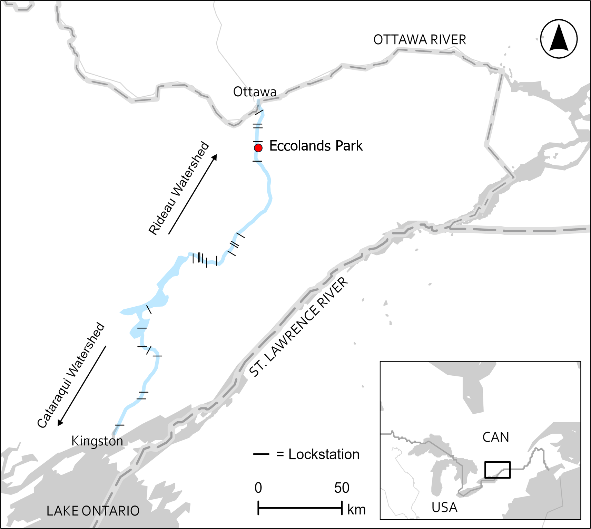
B
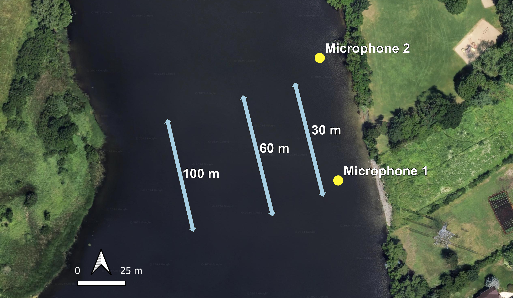
Figure 2 provides a more detailed look at the instrumental setup.
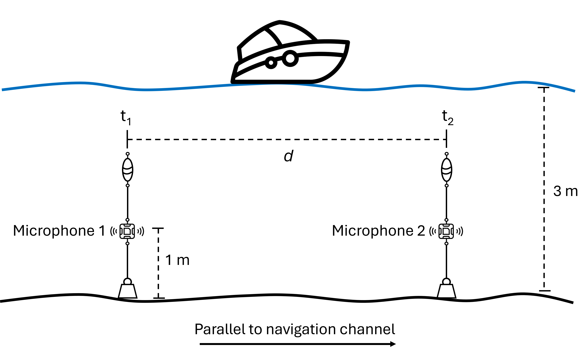
Two recorders were suspended by underwater buoys in a line parallel to the navigation channel. The distance (d) between the recorders is determined from GPS coordinates. When a boat passes, sound is registered first at one microphone, then the other, and the time interval (𝛥t) between sounds can be used to calculate boat speed with:
\[ v = \frac{d}{\Delta t} \tag{1}\]
Most commercial underwater acoustic recorders are bloody expensive. Thankfully, an open-source initiative called Open Acoustic Devices recently released a waterproof version of their low-cost AudioMoth device (Hill et al., 2018), which they’ve dubbed HydroMoth (Lamont et al., 2022). My lab picked up a couple HydroMoths (Figure 3) this past summer and they are used for this experiment.

Three days of trials were selected for method validation (we did a fourth day, but I forgot to press record on one of the mics – whoops!). The boat types used were: 14’ aluminum Lund 1400 Fury; 23’ Ski Nautique Super Air G23 wake surf boat; and 28’ Sea Ray 280 cruiser (Figure 4).


Trials were done late in the season to reduce interference from regular boat traffic. There were 92 controlled boat passes over the three days in this analysis. Passes were performed at 30 meters (m), 60 m and 100 m from shore in upstream and downstream directions, at speeds ranging from 5 km/h up to 70 km/h. Figure 5 shows one of the wake boat passes.

Datasets
Three datasets are used in this analysis:
‘Ground truth’ boat speed observations measured by onboard GPS speedometers and boat pass times recorded by observers onshore. This dataset is transcribed from field notes (Table 1);
Speed estimate results from manual analysis in Excel (Table 2); and
Speed estimate results from automated analysis generated by a for-loop in R (Table 3).
The focus of this EDA is on the automated analysis, though the manual results will be included here and there, especially for error analysis towards the end.
# Boat speed observations
obs <- read_csv("2024_experimental_obs.csv")
obs |>
mutate(across(where(is.numeric), ~ round(.x, 1))) |>
kable() |>
kable_styling(full_width = FALSE) |>
scroll_box(height = "400px")| date | event | time_NDA | time_SR | boat_dist_m | speed_kmh | dir | boat_type | shaper | mic_dist_m | notes |
|---|---|---|---|---|---|---|---|---|---|---|
| 20240920 | 1 | 14:09:00 | NA | 100 | 10 | up | alum | NA | 62.1 | NA |
| 20240920 | 2 | 14:24:31 | NA | 100 | 10 | down | alum | NA | 62.1 | NA |
| 20240920 | 3 | 14:34:12 | NA | 100 | 10 | up | alum | NA | 62.1 | NA |
| 20240920 | 4 | 14:42:20 | NA | 100 | 10 | down | alum | NA | 62.1 | NA |
| 20240920 | 5 | 14:49:55 | NA | 100 | 20 | up | alum | NA | 62.1 | NA |
| 20240920 | 6 | 14:59:35 | NA | 100 | 20 | down | alum | NA | 62.1 | NA |
| 20240920 | 7 | 15:11:35 | NA | 100 | 17 | up | alum | NA | 62.1 | NA |
| 20240920 | 8 | 15:14:00 | NA | NA | NA | NA | NA | NA | 62.1 | not our boat |
| 20240920 | 9 | 15:20:44 | NA | 100 | 21 | down | alum | NA | 62.1 | NA |
| 20240920 | 10 | 15:26:55 | NA | 100 | 30 | up | alum | NA | 62.1 | NA |
| 20240920 | 11 | 15:41:50 | NA | 100 | 27 | down | alum | NA | 62.1 | NA |
| 20240920 | 12 | 15:48:48 | NA | 100 | 28 | up | alum | NA | 62.1 | NA |
| 20240920 | 13 | 15:50:34 | NA | NA | NA | NA | NA | NA | 62.1 | not our boat |
| 20240920 | 14 | 15:58:15 | NA | 60 | 10 | down | alum | NA | 62.1 | NA |
| 20240920 | 15 | 16:06:08 | NA | 60 | 10 | up | alum | NA | 62.1 | NA |
| 20240920 | 16 | 16:09:55 | NA | NA | NA | NA | NA | NA | 62.1 | not our boat |
| 20240925 | 1 | 12:48:39 | 12:49:00 | 100 | 6 | up | wake | off | 68.7 | no wake |
| 20240925 | 2 | 12:53:22 | 12:53:20 | 100 | 6 | down | wake | off | 68.7 | no wake |
| 20240925 | 3 | 12:56:30 | 12:56:50 | 60 | 5.5 | up | wake | off | 68.7 | NA |
| 20240925 | 4 | 12:59:00 | 12:59:10 | 60 | 6 | down | wake | off | 68.7 | NA |
| 20240925 | 5 | 13:02:44 | 13:02:45 | 30 | 6 | up | wake | off | 68.7 | NA |
| 20240925 | 6 | 13:05:08 | 13:05:20 | 30 | 6 | down | wake | off | 68.7 | NA |
| 20240925 | 7 | 13:08:48 | 13:08:50 | 100 | 27 | up | wake | off | 68.7 | NA |
| 20240925 | 8 | 13:15:07 | 13:14:55 | 100 | 27 | down | wake | off | 68.7 | NA |
| 20240925 | 9 | 13:18:23 | 13:18:10 | NA | S | down | cruiser | NA | 68.7 | not our boat |
| 20240925 | 10 | 13:23:40 | 13:23:50 | 100 | 18 | up | wake | on | 68.7 | NA |
| 20240925 | 11 | 13:30:12 | 13:30:12 | 100 | 18 | down | wake | on | 68.7 | NA |
| 20240925 | 12 | 13:36:59 | 13:36:59 | 60 | 18 | up | wake | on | 68.7 | NA |
| 20240925 | 13 | 13:43:45 | 13:43:45 | 60 | 18 | down | wake | on | 68.7 | NA |
| 20240925 | 14 | 13:51:34 | 13:51:34 | 30 | 18 | up | wake | on | 68.7 | NA |
| 20240925 | 15 | 13:58:07 | 13:57:07 | 30 | 18 | down | wake | on | 68.7 | NA |
| 20240925 | 16 | 14:04:26 | 14:04:20 | 30 | 27 | up | wake | on | 68.7 | NA |
| 20240925 | 17 | 14:12:02 | 14:12:02 | 30 | 27 | down | wake | on | 68.7 | NA |
| 20240925 | 18 | 14:19:12 | 14:19:12 | 60 | 27 | up | wake | on | 68.7 | NA |
| 20240925 | 19 | 14:24:59 | 14:24:59 | 60 | 27 | down | wake | on | 68.7 | NA |
| 20240925 | 20 | 14:29:45 | 14:29:45 | 60 | 27 | up | wake | on | 68.7 | NA |
| 20240925 | 21 | 14:33:39 | 14:33:39 | 60 | 27 | down | wake | on | 68.7 | NA |
| 20240925 | 22 | 14:41:56 | 14:42:00 | 100 | 10 | up | wake | on | 68.7 | NA |
| 20240925 | 23 | 14:48:40 | 14:48:45 | 100 | 10 | down | wake | on | 68.7 | NA |
| 20240925 | 24 | 14:52:55 | 14:52:55 | 100 | 27 | up | wake | on | 68.7 | NA |
| 20240925 | 25 | 14:59:24 | 14:59:28 | 100 | 27 | down | wake | on | 68.7 | NA |
| 20240925 | 26 | 15:07:05 | 15:07:05 | 60 | 10 | up | wake | on | 68.7 | NA |
| 20240925 | 27 | 15:12:34 | 15:12:34 | 60 | 10 | down | wake | on | 68.7 | NA |
| 20240925 | 28 | 15:18:52 | 15:18:57 | 30 | 10 | up | wake | on | 68.7 | NA |
| 20240925 | 29 | 15:24:32 | 15:24:40 | 30 | 10 | down | wake | on | 68.7 | NA |
| 20240925 | 30 | 15:33:21 | 15:33:21 | 100 | 18 | up | wake | off | 68.7 | NA |
| 20240925 | 31 | 15:40:09 | 15:40:09 | 100 | 18 | down | wake | off | 68.7 | NA |
| 20240925 | 32 | 15:47:43 | 15:47:43 | 60 | 18 | up | wake | off | 68.7 | NA |
| 20240925 | 33 | 15:55:21 | 15:55:21 | 60 | 18 | down | wake | off | 68.7 | NA |
| 20240925 | 34 | 16:02:25 | 16:02:25 | 30 | 18 | up | wake | off | 68.7 | NA |
| 20240925 | 35 | 16:08:53 | 16:08:10 | 30 | 18 | down | wake | off | 68.7 | RBR tipped |
| 20240925 | 36 | 16:15:35 | 16:15:35 | 60 | 27 | up | wake | off | 68.7 | NA |
| 20240925 | 37 | 16:22:03 | 16:22:03 | 60 | 27 | down | wake | off | 68.7 | NA |
| 20240925 | 38 | 16:28:28 | 16:28:28 | 30 | 27 | up | wake | off | 68.7 | NA |
| 20240925 | 39 | 16:34:51 | 16:34:51 | 30 | 27 | down | wake | off | 68.7 | NA |
| 20240925 | 40 | 16:37:17 | 16:37:17 | 65 | 55 | up | wake | off | 68.7 | NA |
| 20240925 | 41 | 16:43:00 | 16:43:20 | 30 | 57 | down | wake | off | 68.7 | NA |
| 20241004 | 1 | NA | 11:58:30 | 65 | S | up | cruiser | NA | 64.3 | not our boat |
| 20241004 | 2 | NA | 12:08:40 | 100 | 9.7 | up | cruiser | NA | 64.3 | NA |
| 20241004 | 3 | NA | 12:11:15 | 65 | S | down | cruiser | NA | 64.3 | not our boat |
| 20241004 | 4 | NA | 12:20:30 | 100 | 9.9 | down | cruiser | NA | 64.3 | NA |
| 20241004 | 5 | NA | 12:33:20 | 60 | 9.7 | up | cruiser | NA | 64.3 | NA |
| 20241004 | 6 | NA | 12:40:27 | 60 | 9.7 | down | cruiser | NA | 64.3 | NA |
| 20241004 | 7 | NA | 12:44:55 | 50 | M | up | runabout | NA | 64.3 | not our boat |
| 20241004 | 8 | NA | 12:46:25 | 80 | M | up | pontoon | NA | 64.3 | not our boat |
| 20241004 | 9 | NA | 12:50:40 | 30 | 9.5 | up | cruiser | NA | 64.3 | NA |
| 20241004 | 10 | NA | 12:56:15 | 40 | S | down | runabout | NA | 64.3 | not our boat |
| 20241004 | 11 | NA | 12:58:51 | 95 | F | up | ski | NA | 64.3 | not our boat |
| 20241004 | 12 | NA | 13:03:16 | 30 | 9.3 | down | cruiser | NA | 64.3 | NA |
| 20241004 | 13 | NA | 13:09:48 | 30 | 21.7 | up | cruiser | NA | 64.3 | Big! |
| 20241004 | 14 | NA | 13:15:29 | 30 | 20.1 | down | cruiser | NA | 64.3 | Big! |
| 20241004 | 15 | NA | 13:23:24 | 30 | 32.1 | up | cruiser | NA | 64.3 | NA |
| 20241004 | 16 | NA | 13:30:26 | 30 | 30.9 | down | cruiser | NA | 64.3 | NA |
| 20241004 | 17 | NA | 13:40:35 | 30 | 48.2 | up | cruiser | NA | 64.3 | NA |
| 20241004 | 18 | NA | 13:53:23 | 30 | 50.7 | down | cruiser | NA | 64.3 | NA |
| 20241004 | 19 | NA | 13:55:10 | 85 | M | up | alum | NA | 64.3 | not our boat |
| 20241004 | 20 | NA | 14:00:57 | 60 | 27.8 | up | cruiser | NA | 64.3 | NA |
| 20241004 | 21 | NA | 14:06:00 | 60 | 21.5 | down | cruiser | NA | 64.3 | NA |
| 20241004 | 22 | NA | 14:13:10 | 60 | 21.6 | up | cruiser | NA | 64.3 | NA |
| 20241004 | 23 | NA | 14:19:28 | 60 | 60 | down | cruiser | NA | 64.3 | NA |
| 20241004 | 24 | NA | 14:24:51 | 60 | 59.5 | up | cruiser | NA | 64.3 | NA |
| 20241004 | 25 | NA | 14:32:15 | 100 | 19.7 | down | cruiser | NA | 64.3 | NA |
| 20241004 | 26 | NA | 14:38:06 | 100 | 19.9 | up | cruiser | NA | 64.3 | NA |
| 20241004 | 27 | NA | 14:43:46 | 100 | 59.5 | down | cruiser | NA | 64.3 | NA |
| 20241004 | 28 | NA | 14:46:24 | 65 | NA | down | alum | NA | 64.3 | not our boat |
| 20241004 | 29 | NA | 14:52:18 | 100 | 62.1 | up | cruiser | NA | 64.3 | NA |
| 20241004 | 30 | NA | 14:56:50 | 60 | 61.7 | down | cruiser | NA | 64.3 | NA |
| 20241004 | 31 | NA | 15:03:03 | 30 | 61.1 | up | cruiser | NA | 64.3 | NA |
| 20241004 | 32 | NA | 15:11:12 | 60 | NA | down | ski | NA | 64.3 | not our boat |
| 20241004 | 33 | NA | 15:14:38 | 30 | 67.8 | down | cruiser | NA | 64.3 | NA |
| 20241004 | 34 | NA | 15:29:05 | 50 | S | up | runabout | NA | 64.3 | not our boat |
| 20241004 | 35 | NA | 15:33:00 | 30 | 11.2 | up | cruiser | NA | 64.3 | NA |
| 20241004 | 36 | NA | 15:37:21 | 30 | 11.5 | down | cruiser | NA | 64.3 | NA |
| 20241004 | 37 | NA | 15:43:00 | 30 | 18.6 | up | cruiser | NA | 64.3 | NA |
| 20241004 | 38 | NA | 15:48:43 | 30 | 23.1 | down | cruiser | NA | 64.3 | NA |
| 20241004 | 39 | NA | 15:55:13 | 60 | 11.6 | up | cruiser | NA | 64.3 | NA |
| 20241004 | 40 | NA | 16:01:35 | 60 | 11.6 | down | cruiser | NA | 64.3 | NA |
| 20241004 | 41 | NA | 16:05:37 | 60 | 22 | up | cruiser | NA | 64.3 | NA |
| 20241004 | 42 | NA | 16:10:24 | 100 | 64.1 | down | cruiser | NA | 64.3 | NA |
| 20241004 | 43 | NA | 16:15:10 | 100 | 67.1 | up | cruiser | NA | 64.3 | NA |
| 20241004 | 44 | NA | 16:20:50 | 100 | 22 | down | cruiser | NA | 64.3 | NA |
| 20241004 | 45 | NA | 16:24:48 | 35 | S | down | runabout | NA | 64.3 | not our boat |
| 20241004 | 46 | NA | 16:30:05 | 100 | 20.9 | up | cruiser | NA | 64.3 | NA |
| 20241004 | 47 | NA | 16:36:31 | 100 | 10.5 | down | cruiser | NA | 64.3 | NA |
| 20241004 | 48 | NA | 16:44:21 | 100 | 10.7 | up | cruiser | NA | 64.3 | NA |
| 20241004 | 49 | NA | 16:50:10 | 60 | 23.9 | down | runabout | NA | 64.3 | NA |
| 20241004 | 50 | NA | 16:53:22 | 60 | F | down | cruiser | NA | 64.3 | knee boarder |
| 20241004 | 51 | NA | 16:56:36 | 60 | 59.9 | up | cruiser | NA | 64.3 | NA |
| 20241004 | 52 | NA | 16:58:25 | 60 | F | up | runabout | NA | 64.3 | not our boat |
| 20241009 | 1 | NA | 11:45:09 | 100 | 9.5 | up | bass | NA | 33.8 | NA |
| 20241009 | 2 | NA | 11:49:20 | 100 | 9.8 | down | bass | NA | 33.8 | NA |
| 20241009 | 3 | NA | 11:54:15 | 100 | 19 | up | bass | NA | 33.8 | NA |
| 20241009 | 4 | NA | 11:59:22 | 100 | 17.3 | down | bass | NA | 33.8 | NA |
| 20241009 | 5 | NA | 12:03:50 | 100 | 32 | up | bass | NA | 33.8 | NA |
| 20241009 | 6 | NA | 12:08:17 | 100 | 32 | down | bass | NA | 33.8 | NA |
| 20241009 | 7 | NA | 12:13:00 | 100 | 60.1 | up | bass | NA | 33.8 | NA |
| 20241009 | 8 | NA | 12:17:30 | 100 | 60.5 | down | bass | NA | 33.8 | NA |
| 20241009 | 9 | NA | 12:21:57 | 60 | 9 | up | bass | NA | 33.8 | NA |
| 20241009 | 10 | NA | 12:25:40 | 60 | 9.3 | down | bass | NA | 33.8 | NA |
| 20241009 | 11 | NA | 12:29:30 | 60 | 20 | up | bass | NA | 33.8 | NA |
| 20241009 | 12 | NA | 12:34:09 | 60 | 18 | down | bass | NA | 33.8 | NA |
| 20241009 | 13 | NA | 12:39:28 | 60 | 17.5 | up | bass | NA | 33.8 | NA |
| 20241009 | 14 | NA | 12:44:22 | 60 | 17.5 | down | bass | NA | 33.8 | NA |
| 20241009 | 15 | NA | 12:48:20 | 60 | 30 | up | bass | NA | 33.8 | NA |
| 20241009 | 16 | NA | 12:52:20 | 60 | 31 | down | bass | NA | 33.8 | NA |
| 20241009 | 17 | NA | 12:57:42 | 60 | 58 | up | bass | NA | 33.8 | NA |
| 20241009 | 18 | NA | 13:02:25 | 60 | 60 | down | bass | NA | 33.8 | NA |
| 20241009 | 19 | NA | 13:06:50 | 30 | 9.6 | up | bass | NA | 33.8 | NA |
| 20241009 | 20 | NA | 13:09:09 | 30 | 9.6 | down | bass | NA | 33.8 | NA |
| 20241009 | 21 | NA | 13:12:01 | 30 | 17.4 | up | bass | NA | 33.8 | NA |
| 20241009 | 22 | NA | 13:17:50 | 30 | 18 | down | bass | NA | 33.8 | NA |
| 20241009 | 23 | NA | 13:21:47 | 30 | 35 | up | bass | NA | 33.8 | NA |
| 20241009 | 24 | NA | 13:25:59 | 30 | 29 | down | bass | NA | 33.8 | NA |
| 20241009 | 25 | NA | 13:29:45 | 30 | 60 | up | bass | NA | 33.8 | NA |
| 20241009 | 26 | NA | 13:33:19 | 30 | 58 | down | bass | NA | 33.8 | NA |
| 20241009 | 27 | NA | 13:37:55 | 100 | 9.3 | up | bass | NA | 33.8 | NA |
| 20241009 | 28 | NA | 13:41:25 | 100 | 9.8 | down | bass | NA | 33.8 | NA |
| 20241009 | 29 | NA | 13:46:30 | 100 | 17.5 | up | bass | NA | 33.8 | NA |
| 20241009 | 30 | NA | 13:50:45 | 100 | 18 | down | bass | NA | 33.8 | NA |
| 20241009 | 31 | NA | 13:54:15 | 100 | 31 | up | bass | NA | 33.8 | NA |
| 20241009 | 32 | NA | 13:57:50 | 100 | 30 | down | bass | NA | 33.8 | NA |
| 20241009 | 33 | NA | 14:01:30 | 100 | 60 | up | bass | NA | 33.8 | NA |
| 20241009 | 34 | NA | 14:05:15 | 100 | 60 | down | bass | NA | 33.8 | NA |
| 20241009 | 35 | NA | 14:09:30 | 60 | 9.5 | up | bass | NA | 33.8 | NA |
| 20241009 | 36 | NA | 14:12:49 | 60 | 9.5 | down | bass | NA | 33.8 | NA |
| 20241009 | 37 | NA | 14:16:15 | 60 | 33 | up | bass | NA | 33.8 | NA |
| 20241009 | 38 | NA | 14:20:08 | 60 | 30 | up | bass | NA | 33.8 | NA |
| 20241009 | 39 | NA | 14:23:52 | 60 | 58 | down | bass | NA | 33.8 | NA |
| 20241009 | 40 | NA | 14:26:49 | 60 | 60 | up | bass | NA | 33.8 | NA |
| 20241009 | 41 | NA | 14:29:52 | NA | S | up | yacht | NA | 33.8 | Le Boat |
| 20241009 | 42 | NA | 14:32:47 | 30 | 9.6 | up | bass | NA | 33.8 | NA |
| 20241009 | 43 | NA | 14:36:35 | 30 | 9.5 | down | bass | NA | 33.8 | NA |
| 20241009 | 44 | NA | 14:39:08 | 30 | 16.5 | up | bass | NA | 33.8 | NA |
| 20241009 | 45 | NA | 14:42:58 | 30 | 18 | down | bass | NA | 33.8 | NA |
| 20241009 | 46 | NA | 14:46:26 | 30 | 30 | up | bass | NA | 33.8 | NA |
| 20241009 | 47 | NA | 14:50:33 | 30 | 31 | down | bass | NA | 33.8 | NA |
| 20241009 | 48 | NA | 14:53:55 | 30 | 57 | up | bass | NA | 33.8 | NA |
| 20241009 | 49 | NA | 14:57:50 | 30 | 59.5 | down | bass | NA | 33.8 | NA |
# Manual boat speed estimates
man <- read_csv("man_est.csv")
man |>
mutate(across(where(is.numeric), ~ round(.x, 1))) |>
kable() |>
kable_styling(full_width = FALSE) |>
scroll_box(height = "400px")| date | time | dist_m | pred_kmh | obs_kmh | type | notes |
|---|---|---|---|---|---|---|
| 9/20/2024 | 14:10:30 | 100 | 5.3 | 10 | alum | not our boat? |
| 9/20/2024 | 14:25:09 | 100 | 6.6 | 10 | alum | NA |
| 9/20/2024 | 14:34:22 | 100 | 5.4 | 10 | alum | not our boat |
| 9/20/2024 | 14:42:22 | 100 | 6.6 | 10 | alum | not out boat |
| 9/20/2024 | 14:49:58 | 100 | 13.5 | 20 | alum | NA |
| 9/20/2024 | 14:59:40 | 100 | 10.9 | 20 | alum | not our boat |
| 9/20/2024 | 15:11:34 | 100 | 16.3 | 17 | alum | not our boat |
| 9/20/2024 | 15:14:18 | #N/A | 9.0 | #N/A | alum | NA |
| 9/20/2024 | 15:20:42 | 100 | 15.0 | 21 | alum | NA |
| 9/20/2024 | 15:26:58 | 100 | 13.7 | 30 | alum | NA |
| 9/20/2024 | 15:41:50 | 100 | 18.5 | 27 | alum | NA |
| 9/20/2024 | 15:48:50 | 100 | 21.3 | 28 | alum | NA |
| 9/20/2024 | 15:50:22 | #N/A | 35.5 | #N/A | alum | not our boat? |
| 9/20/2024 | 15:58:18 | 60 | 8.8 | 10 | alum | NA |
| 9/20/2024 | 16:06:16 | 60 | 9.6 | 10 | alum | ? |
| 9/20/2024 | 16:09:54 | #N/A | 26.3 | #N/A | alum | NA |
| 9/20/2024 | 16:12:59 | #N/A | 26.9 | #N/A | alum | not our boat |
| 9/20/2024 | 16:17:50 | #N/A | 23.8 | #N/A | alum | NA |
| 9/20/2024 | 16:18:36 | #N/A | 21.9 | #N/A | alum | NA |
| 9/25/2024 | 12:48:58 | 100 | 4.6 | 6 | wake | NA |
| 9/25/2024 | 12:53:37 | 100 | 5.2 | 6 | wake | NA |
| 9/25/2024 | 12:56:55 | 60 | 5.9 | 5.5 | wake | NA |
| 9/25/2024 | 12:59:14 | 60 | 5.6 | 6 | wake | NA |
| 9/25/2024 | 13:02:52 | 30 | 6.7 | 6 | wake | NA |
| 9/25/2024 | 13:05:27 | 30 | 6.2 | 6 | wake | NA |
| 9/25/2024 | 13:08:51 | 100 | 35.3 | 27 | wake | Not our boat |
| 9/25/2024 | 13:14:54 | 100 | 27.5 | 27 | wake | NA |
| 9/25/2024 | 13:17:57 | #N/A | 7.5 | #N/A | wake | NA |
| 9/25/2024 | 13:23:52 | 100 | 18.2 | 18 | wake | NA |
| 9/25/2024 | 13:30:01 | 100 | 21.5 | 18 | wake | not out boat |
| 9/25/2024 | 13:37:08 | 60 | 16.6 | 18 | wake | NA |
| 9/25/2024 | 13:43:56 | 60 | 19.5 | 18 | wake | not out boat |
| 9/25/2024 | 13:51:41 | 30 | 17.8 | 18 | wake | NA |
| 9/25/2024 | 13:58:14 | 30 | 19.5 | 18 | wake | NA |
| 9/25/2024 | 14:04:27 | 30 | 27.5 | 27 | wake | NA |
| 9/25/2024 | 14:12:06 | 30 | 25.8 | 27 | wake | NA |
| 9/25/2024 | 14:19:12 | 60 | 22.1 | 27 | wake | NA |
| 9/25/2024 | 14:25:06 | 60 | 38.0 | 27 | wake | NA |
| 9/25/2024 | 14:29:57 | 60 | 17.9 | 27 | wake | NA |
| 9/25/2024 | 14:33:44 | 60 | 25.8 | 27 | wake | NA |
| 9/25/2024 | 14:41:58 | 100 | 11.3 | 10 | wake | NA |
| 9/25/2024 | 14:48:49 | 100 | 10.7 | 10 | wake | NA |
| 9/25/2024 | 14:52:59 | 100 | 19.5 | 27 | wake | Not our boat |
| 9/25/2024 | 14:59:30 | 100 | 28.1 | 27 | wake | NA |
| 9/25/2024 | 15:07:09 | 60 | 8.2 | 10 | wake | NA |
| 9/25/2024 | 15:12:42 | 60 | 10.3 | 10 | wake | NA |
| 9/25/2024 | 15:18:58 | 30 | 10.3 | 10 | wake | NA |
| 9/25/2024 | 15:24:40 | 30 | 10.8 | 10 | wake | Not out boat |
| 9/25/2024 | 15:33:30 | 100 | 22.7 | 18 | wake | NA |
| 9/25/2024 | 15:40:12 | 100 | 15.1 | 18 | wake | NA |
| 9/25/2024 | 15:47:48 | 60 | 17.7 | 18 | wake | Not our boat |
| 9/25/2024 | 15:55:26 | 60 | 17.7 | 18 | wake | NA |
| 9/25/2024 | 16:02:30 | 30 | 16.5 | 18 | wake | NA |
| 9/25/2024 | 16:08:57 | 30 | 19.0 | 18 | wake | NA |
| 9/25/2024 | 16:15:39 | 60 | 20.6 | 27 | wake | NA |
| 9/25/2024 | 16:22:08 | 60 | 24.7 | 27 | wake | NA |
| 9/25/2024 | 16:28:30 | 30 | 30.9 | 27 | wake | NA |
| 9/25/2024 | 16:34:54 | 30 | 27.5 | 27 | wake | NA |
| 9/25/2024 | 16:37:40 | 65 | 46.7 | 55 | wake | NA |
| 9/25/2024 | 16:43:11 | 30 | 49.5 | 57 | wake | NA |
| 9/25/2024 | 16:59:30 | #N/A | 30.9 | #N/A | wake | NA |
| 10/4/2024 | 12:00:42 | #N/A | 0.8 | #N/A | cruiser | NA |
| 10/4/2024 | 12:08:10 | 100 | 4.5 | 9.7 | cruiser | NA |
| 10/4/2024 | 12:11:15 | #N/A | 9.9 | #N/A | cruiser | NA |
| 10/4/2024 | 12:20:36 | 100 | 12.7 | 9.9 | cruiser | NA |
| 10/4/2024 | 12:33:22 | 60 | 11.5 | 9.7 | cruiser | NA |
| 10/4/2024 | 12:39:34 | #N/A | 61.3 | #N/A | cruiser | NA |
| 10/4/2024 | 12:40:29 | 60 | 10.7 | 9.7 | cruiser | NA |
| 10/4/2024 | 12:44:51 | #N/A | 15.8 | #N/A | cruiser | NA |
| 10/4/2024 | 12:46:21 | #N/A | 15.7 | #N/A | cruiser | NA |
| 10/4/2024 | 12:50:35 | 30 | 10.4 | 9.5 | cruiser | NA |
| 10/4/2024 | 12:56:16 | #N/A | 8.9 | #N/A | cruiser | NA |
| 10/4/2024 | 12:58:49 | #N/A | 24.9 | #N/A | cruiser | NA |
| 10/4/2024 | 13:03:26 | 30 | 11.3 | 9.3 | cruiser | NA |
| 10/4/2024 | 13:09:42 | 30 | 21.1 | 21.7 | cruiser | NA |
| 10/4/2024 | 13:15:32 | 30 | 23.5 | 20.1 | cruiser | NA |
| 10/4/2024 | 13:23:28 | 30 | 30.2 | 32.1 | cruiser | NA |
| 10/4/2024 | 13:30:28 | 30 | 45.9 | 30.9 | cruiser | NA |
| 10/4/2024 | 13:33:48 | #N/A | 576.7 | #N/A | cruiser | NA |
| 10/4/2024 | 13:40:26 | 30 | 64.9 | 48.2 | cruiser | NA |
| 10/4/2024 | 13:50:27 | #N/A | 147.8 | #N/A | cruiser | NA |
| 10/4/2024 | 13:53:24 | 30 | 63.7 | 50.7 | cruiser | NA |
| 10/4/2024 | 13:55:11 | #N/A | 16.6 | #N/A | cruiser | NA |
| 10/4/2024 | 14:00:56 | 60 | 16.5 | 27.8 | cruiser | NA |
| 10/4/2024 | 14:06:02 | 60 | 28.7 | 21.5 | cruiser | NA |
| 10/4/2024 | 14:13:16 | 60 | 25.7 | 21.6 | cruiser | NA |
| 10/4/2024 | 14:19:27 | 60 | 73.8 | 60 | cruiser | NA |
| 10/4/2024 | 14:24:55 | 60 | 78.2 | 59.5 | cruiser | NA |
| 10/4/2024 | 14:32:17 | 100 | 38.2 | 19.7 | cruiser | NA |
| 10/4/2024 | 14:38:00 | 100 | 20.9 | 19.9 | cruiser | NA |
| 10/4/2024 | 14:43:49 | 100 | 46.0 | 59.5 | cruiser | NA |
| 10/4/2024 | 14:46:24 | #N/A | 29.4 | #N/A | cruiser | NA |
| 10/4/2024 | 14:52:07 | 100 | 42.3 | 62.1 | cruiser | NA |
| 10/4/2024 | 14:56:51 | 60 | 76.1 | 61.7 | cruiser | NA |
| 10/4/2024 | 15:03:04 | 30 | 91.0 | 61.1 | cruiser | NA |
| 10/4/2024 | 15:11:32 | #N/A | 582.6 | #N/A | cruiser | NA |
| 10/4/2024 | 15:14:38 | 30 | 88.3 | 67.8 | cruiser | NA |
| 10/4/2024 | 15:29:02 | #N/A | 14.0 | #N/A | cruiser | NA |
| 10/4/2024 | 15:33:04 | 30 | 18.1 | 11.2 | cruiser | NA |
| 10/4/2024 | 15:37:25 | 30 | 19.0 | 11.5 | cruiser | NA |
| 10/4/2024 | 15:43:00 | 30 | 33.7 | 18.6 | cruiser | NA |
| 10/4/2024 | 15:48:40 | 30 | 32.8 | 23.1 | cruiser | NA |
| 10/4/2024 | 15:55:09 | 60 | 14.5 | 11.6 | cruiser | NA |
| 10/4/2024 | 16:01:34 | 60 | 26.8 | 11.6 | cruiser | NA |
| 10/4/2024 | 16:05:37 | 60 | 22.3 | 22 | cruiser | NA |
| 10/4/2024 | 16:10:23 | 100 | 120.5 | 64.1 | cruiser | NA |
| 10/4/2024 | 16:15:09 | 100 | 51.9 | 67.1 | cruiser | NA |
| 10/4/2024 | 16:20:48 | 100 | 35.4 | 22 | cruiser | NA |
| 10/4/2024 | 16:24:52 | #N/A | 15.5 | #N/A | cruiser | NA |
| 10/4/2024 | 16:30:03 | 100 | 15.9 | 20.9 | cruiser | NA |
| 10/4/2024 | 16:36:21 | 100 | 19.6 | 10.5 | cruiser | NA |
| 10/4/2024 | 16:44:32 | 100 | 11.3 | 10.7 | cruiser | NA |
| 10/4/2024 | 16:50:10 | 60 | 43.7 | 23.9 | cruiser | NA |
| 10/4/2024 | 16:53:18 | #N/A | 56.8 | #N/A | cruiser | NA |
| 10/4/2024 | 16:56:37 | 60 | 126.7 | 59.9 | cruiser | NA |
| 10/4/2024 | 16:58:25 | #N/A | 69.1 | #N/A | cruiser | NA |
| 10/4/2024 | 16:49:57 | #N/A | 0.4 | #N/A | cruiser | NA |
# Automatic boat speed estimates
auto <- read_csv("auto_est.csv")
auto |>
mutate(across(where(is.numeric), ~ round(.x, 1))) |>
kable() |>
kable_styling(full_width = FALSE) |>
scroll_box(height = "400px")| event | group_id | group_event | event_time | event_datetime | mic_dist_m | mic_1 | mic_2 | peak_avg | delta_t_s | speed_ms | speed_kmh | file | file_time |
|---|---|---|---|---|---|---|---|---|---|---|---|---|---|
| 1 | 1 | 1 | 14:08:28 | 2024-09-20 14:08:28 | 62.1 | 651.1 | 366.6 | 508.9 | 284.5 | 0.2 | 0.8 | 20240920_140000.WAV | 2024-09-20 14:00:00 |
| 2 | 1 | 2 | 14:10:09 | 2024-09-20 14:10:09 | 62.1 | NA | 609.0 | NA | NA | NA | NA | 20240920_140000.WAV | 2024-09-20 14:00:00 |
| 3 | 2 | 1 | 14:25:12 | 2024-09-20 14:25:12 | 62.1 | 292.5 | 332.6 | 312.5 | 40.1 | 1.5 | 5.6 | 20240920_142000.WAV | 2024-09-20 14:20:00 |
| 4 | 2 | 2 | 14:34:25 | 2024-09-20 14:34:25 | 62.1 | 883.5 | 847.4 | 865.4 | 36.1 | 1.7 | 6.2 | 20240920_142000.WAV | 2024-09-20 14:20:00 |
| 5 | 3 | 1 | 14:42:22 | 2024-09-20 14:42:22 | 62.1 | 122.2 | 163.3 | 142.7 | 41.1 | 1.5 | 5.4 | 20240920_144000.WAV | 2024-09-20 14:40:00 |
| 6 | 3 | 2 | 14:49:58 | 2024-09-20 14:49:58 | 62.1 | 607.0 | 590.0 | 598.5 | 17.0 | 3.6 | 13.1 | 20240920_144000.WAV | 2024-09-20 14:40:00 |
| 7 | 3 | 3 | 14:59:41 | 2024-09-20 14:59:41 | 62.1 | 1170.0 | 1193.0 | 1181.5 | 23.0 | 2.7 | 9.7 | 20240920_144000.WAV | 2024-09-20 14:40:00 |
| 8 | 4 | 1 | 15:05:25 | 2024-09-20 15:05:25 | 62.1 | 559.9 | 91.2 | 325.5 | 468.8 | 0.1 | 0.5 | 20240920_150000.WAV | 2024-09-20 15:00:00 |
| 9 | 4 | 2 | 15:10:35 | 2024-09-20 15:10:35 | 62.1 | 711.2 | 558.9 | 635.1 | 152.3 | 0.4 | 1.5 | 20240920_150000.WAV | 2024-09-20 15:00:00 |
| 10 | 4 | 3 | 15:12:47 | 2024-09-20 15:12:47 | 62.1 | 845.4 | 690.2 | 767.8 | 155.3 | 0.4 | 1.4 | 20240920_150000.WAV | 2024-09-20 15:00:00 |
| 11 | 4 | 4 | 15:14:34 | 2024-09-20 15:14:34 | 62.1 | NA | 874.5 | NA | NA | NA | NA | 20240920_150000.WAV | 2024-09-20 15:00:00 |
| 12 | 5 | 1 | 15:20:47 | 2024-09-20 15:20:47 | 62.1 | 35.1 | 60.1 | 47.6 | 25.0 | 2.5 | 8.9 | 20240920_152000.WAV | 2024-09-20 15:20:00 |
| 13 | 5 | 2 | 15:26:32 | 2024-09-20 15:26:32 | 62.1 | 427.7 | 357.6 | 392.7 | 70.1 | 0.9 | 3.2 | 20240920_152000.WAV | 2024-09-20 15:20:00 |
| 14 | 5 | 3 | 15:26:51 | 2024-09-20 15:26:51 | 62.1 | NA | 411.7 | NA | NA | NA | NA | 20240920_152000.WAV | 2024-09-20 15:20:00 |
| 15 | 6 | 1 | 15:41:51 | 2024-09-20 15:41:51 | 62.1 | 104.2 | 119.2 | 111.7 | 15.0 | 4.1 | 14.9 | 20240920_154000.WAV | 2024-09-20 15:40:00 |
| 16 | 6 | 2 | 15:48:53 | 2024-09-20 15:48:53 | 62.1 | 540.9 | 525.9 | 533.4 | 15.0 | 4.1 | 14.9 | 20240920_154000.WAV | 2024-09-20 15:40:00 |
| 17 | 6 | 3 | 15:50:15 | 2024-09-20 15:50:15 | 62.1 | 625.0 | 605.0 | 615.0 | 20.0 | 3.1 | 11.2 | 20240920_154000.WAV | 2024-09-20 15:40:00 |
| 18 | 6 | 4 | 15:58:20 | 2024-09-20 15:58:20 | 62.1 | 1086.8 | 1114.9 | 1100.8 | 28.0 | 2.2 | 8.0 | 20240920_154000.WAV | 2024-09-20 15:40:00 |
| 19 | 7 | 1 | 16:03:29 | 2024-09-20 16:03:29 | 62.1 | 389.7 | 29.0 | 209.3 | 360.6 | 0.2 | 0.6 | 20240920_160000.WAV | 2024-09-20 16:00:00 |
| 20 | 7 | 2 | 16:07:58 | 2024-09-20 16:07:58 | 62.1 | 590.0 | 367.6 | 478.8 | 222.4 | 0.3 | 1.0 | 20240920_160000.WAV | 2024-09-20 16:00:00 |
| 21 | 7 | 3 | 16:11:33 | 2024-09-20 16:11:33 | 62.1 | 786.3 | 601.0 | 693.7 | 185.3 | 0.3 | 1.2 | 20240920_160000.WAV | 2024-09-20 16:00:00 |
| 22 | 7 | 4 | 16:15:21 | 2024-09-20 16:15:21 | 62.1 | 1066.8 | 775.3 | 921.0 | 291.5 | 0.2 | 0.8 | 20240920_160000.WAV | 2024-09-20 16:00:00 |
| 23 | 7 | 5 | 16:18:19 | 2024-09-20 16:18:19 | 62.1 | 1122.9 | 1075.8 | 1099.3 | 47.1 | 1.3 | 4.7 | 20240920_160000.WAV | 2024-09-20 16:00:00 |
| 24 | 7 | 6 | 16:18:32 | 2024-09-20 16:18:32 | 62.1 | NA | 1112.9 | NA | NA | NA | NA | 20240920_160000.WAV | 2024-09-20 16:00:00 |
| 25 | 8 | 1 | 16:21:27 | 2024-09-20 16:21:27 | 62.1 | 85.1 | 90.2 | 87.6 | 5.0 | 12.4 | 44.6 | 20240920_162000.WAV | 2024-09-20 16:20:00 |
| 26 | 8 | 2 | 16:22:15 | 2024-09-20 16:22:15 | 62.1 | 140.2 | 130.2 | 135.2 | 10.0 | 6.2 | 22.3 | 20240920_162000.WAV | 2024-09-20 16:20:00 |
| 27 | 8 | 3 | 16:24:33 | 2024-09-20 16:24:33 | 62.1 | 295.5 | 251.4 | 273.5 | 44.1 | 1.4 | 5.1 | 20240920_162000.WAV | 2024-09-20 16:20:00 |
| 28 | 8 | 4 | 16:25:27 | 2024-09-20 16:25:27 | 62.1 | 348.6 | 305.5 | 327.0 | 43.1 | 1.4 | 5.2 | 20240920_162000.WAV | 2024-09-20 16:20:00 |
| 29 | 8 | 5 | 16:26:22 | 2024-09-20 16:26:22 | 62.1 | 425.7 | 339.6 | 382.6 | 86.1 | 0.7 | 2.6 | 20240920_162000.WAV | 2024-09-20 16:20:00 |
| 30 | 8 | 6 | 16:31:37 | 2024-09-20 16:31:37 | 62.1 | 960.6 | 434.7 | 697.7 | 525.9 | 0.1 | 0.4 | 20240920_162000.WAV | 2024-09-20 16:20:00 |
| 31 | 8 | 7 | 16:32:01 | 2024-09-20 16:32:01 | 62.1 | NA | 721.2 | NA | NA | NA | NA | 20240920_162000.WAV | 2024-09-20 16:20:00 |
| 32 | 8 | 8 | 16:35:53 | 2024-09-20 16:35:53 | 62.1 | NA | 953.6 | NA | NA | NA | NA | 20240920_162000.WAV | 2024-09-20 16:20:00 |
| NA | 9 | NA | NA | NA | NA | NA | NA | NA | NA | NA | NA | 20240920_164000.WAV | 2024-09-20 16:40:00 |
| 33 | 10 | 1 | 17:12:31 | 2024-09-20 17:12:31 | 62.1 | 741.2 | 762.3 | 751.8 | 21.0 | 3.0 | 10.6 | 20240920_170000.WAV | 2024-09-20 17:00:00 |
| 34 | 10 | 2 | 17:17:57 | 2024-09-20 17:17:57 | 62.1 | 1079.8 | 1075.8 | 1077.8 | 4.0 | 15.5 | 55.8 | 20240920_170000.WAV | 2024-09-20 17:00:00 |
| 35 | 11 | 1 | 17:29:00 | 2024-09-20 17:29:00 | 62.1 | 550.9 | 530.0 | 540.4 | 20.9 | 3.0 | 10.7 | 20240920_172000.WAV | 2024-09-20 17:20:00 |
| 36 | 11 | 2 | 17:31:01 | 2024-09-20 17:31:01 | 62.1 | 662.0 | 660.2 | 661.1 | 1.8 | 34.4 | 123.9 | 20240920_172000.WAV | 2024-09-20 17:20:00 |
| 37 | 11 | 3 | 17:34:11 | 2024-09-20 17:34:11 | 62.1 | 835.3 | 867.6 | 851.5 | 32.3 | 1.9 | 6.9 | 20240920_172000.WAV | 2024-09-20 17:20:00 |
| 38 | 11 | 4 | 17:35:16 | 2024-09-20 17:35:16 | 62.1 | NA | 916.7 | NA | NA | NA | NA | 20240920_172000.WAV | 2024-09-20 17:20:00 |
| NA | 1 | NA | NA | NA | NA | NA | NA | NA | NA | NA | NA | 20240925_114000.WAV | 2024-09-25 11:40:00 |
| NA | 2 | NA | NA | NA | NA | NA | NA | NA | NA | NA | NA | 20240925_120000.WAV | 2024-09-25 12:00:00 |
| NA | 3 | NA | NA | NA | NA | NA | NA | NA | NA | NA | NA | 20240925_122000.WAV | 2024-09-25 12:20:00 |
| NA | 4 | NA | NA | NA | NA | NA | NA | NA | NA | NA | NA | 20240925_124000.WAV | 2024-09-25 12:40:00 |
| 1 | 5 | 1 | 13:08:46 | 2024-09-25 13:08:46 | 68.7 | 535.9 | 517.9 | 526.9 | 18.0 | 3.8 | 13.7 | 20240925_130000.WAV | 2024-09-25 13:00:00 |
| 2 | 5 | 2 | 13:14:53 | 2024-09-25 13:14:53 | 68.7 | 888.5 | 899.5 | 894.0 | 11.0 | 6.2 | 22.4 | 20240925_130000.WAV | 2024-09-25 13:00:00 |
| 3 | 5 | 3 | 13:18:01 | 2024-09-25 13:18:01 | 68.7 | 1068.8 | 1093.8 | 1081.3 | 25.0 | 2.7 | 9.9 | 20240925_130000.WAV | 2024-09-25 13:00:00 |
| 4 | 6 | 1 | 13:23:51 | 2024-09-25 13:23:51 | 68.7 | 238.4 | 224.4 | 231.4 | 14.0 | 4.9 | 17.6 | 20240925_132000.WAV | 2024-09-25 13:20:00 |
| 5 | 6 | 2 | 13:30:03 | 2024-09-25 13:30:03 | 68.7 | 598.0 | 609.0 | 603.5 | 11.0 | 6.2 | 22.4 | 20240925_132000.WAV | 2024-09-25 13:20:00 |
| 6 | 6 | 3 | 13:37:08 | 2024-09-25 13:37:08 | 68.7 | 1037.7 | 1018.7 | 1028.2 | 19.0 | 3.6 | 13.0 | 20240925_132000.WAV | 2024-09-25 13:20:00 |
| 7 | 7 | 1 | 13:43:55 | 2024-09-25 13:43:55 | 68.7 | 229.4 | 242.4 | 235.9 | 13.0 | 5.3 | 19.0 | 20240925_134000.WAV | 2024-09-25 13:40:00 |
| 8 | 7 | 2 | 13:51:41 | 2024-09-25 13:51:41 | 68.7 | 708.2 | 694.2 | 701.2 | 14.0 | 4.9 | 17.6 | 20240925_134000.WAV | 2024-09-25 13:40:00 |
| 9 | 7 | 3 | 13:56:58 | 2024-09-25 13:56:58 | 68.7 | 936.6 | 1100.8 | 1018.7 | 164.3 | 0.4 | 1.5 | 20240925_134000.WAV | 2024-09-25 13:40:00 |
| 10 | 7 | 4 | 13:58:07 | 2024-09-25 13:58:07 | 68.7 | 1087.8 | NA | NA | NA | NA | NA | 20240925_134000.WAV | 2024-09-25 13:40:00 |
| 11 | 8 | 1 | 14:04:21 | 2024-09-25 14:04:21 | 68.7 | 272.5 | 250.4 | 261.4 | 22.0 | 3.1 | 11.2 | 20240925_140000.WAV | 2024-09-25 14:00:00 |
| 12 | 8 | 2 | 14:12:06 | 2024-09-25 14:12:06 | 68.7 | 721.2 | 731.2 | 726.2 | 10.0 | 6.9 | 24.7 | 20240925_140000.WAV | 2024-09-25 14:00:00 |
| 13 | 8 | 3 | 14:19:07 | 2024-09-25 14:19:07 | 68.7 | 1157.9 | 1136.9 | 1147.4 | 21.0 | 3.3 | 11.8 | 20240925_140000.WAV | 2024-09-25 14:00:00 |
| 14 | 9 | 1 | 14:25:07 | 2024-09-25 14:25:07 | 68.7 | 302.5 | 311.5 | 307.0 | 9.0 | 7.6 | 27.4 | 20240925_142000.WAV | 2024-09-25 14:20:00 |
| 15 | 9 | 2 | 14:29:52 | 2024-09-25 14:29:52 | 68.7 | 606.0 | 579.0 | 592.5 | 27.0 | 2.5 | 9.1 | 20240925_142000.WAV | 2024-09-25 14:20:00 |
| 16 | 9 | 3 | 14:33:44 | 2024-09-25 14:33:44 | 68.7 | 820.4 | 829.4 | 824.9 | 9.0 | 7.6 | 27.4 | 20240925_142000.WAV | 2024-09-25 14:20:00 |
| 17 | 10 | 1 | 14:47:33 | 2024-09-25 14:47:33 | 68.7 | 144.2 | 763.3 | 453.8 | 619.0 | 0.1 | 0.4 | 20240925_144000.WAV | 2024-09-25 14:40:00 |
| 18 | 10 | 2 | 14:54:06 | 2024-09-25 14:54:06 | 68.7 | 518.9 | 1175.0 | 846.9 | 656.1 | 0.1 | 0.4 | 20240925_144000.WAV | 2024-09-25 14:40:00 |
| 19 | 10 | 3 | 14:52:43 | 2024-09-25 14:52:43 | 68.7 | 763.3 | NA | NA | NA | NA | NA | 20240925_144000.WAV | 2024-09-25 14:40:00 |
| 20 | 10 | 4 | 14:59:26 | 2024-09-25 14:59:26 | 68.7 | 1167.0 | NA | NA | NA | NA | NA | 20240925_144000.WAV | 2024-09-25 14:40:00 |
| 21 | 11 | 1 | 15:06:47 | 2024-09-25 15:06:47 | 68.7 | 444.7 | 370.6 | 407.7 | 74.1 | 0.9 | 3.3 | 20240925_150000.WAV | 2024-09-25 15:00:00 |
| 22 | 11 | 2 | 15:12:41 | 2024-09-25 15:12:41 | 68.7 | 749.3 | 774.3 | 761.8 | 25.0 | 2.7 | 9.9 | 20240925_150000.WAV | 2024-09-25 15:00:00 |
| 23 | 11 | 3 | 15:18:58 | 2024-09-25 15:18:58 | 68.7 | 1150.9 | 1125.9 | 1138.4 | 25.0 | 2.7 | 9.9 | 20240925_150000.WAV | 2024-09-25 15:00:00 |
| 24 | 12 | 1 | 15:24:21 | 2024-09-25 15:24:21 | 68.7 | 234.4 | 289.5 | 261.9 | 55.1 | 1.2 | 4.5 | 20240925_152000.WAV | 2024-09-25 15:20:00 |
| 25 | 12 | 2 | 15:33:31 | 2024-09-25 15:33:31 | 68.7 | 821.4 | 802.3 | 811.9 | 19.0 | 3.6 | 13.0 | 20240925_152000.WAV | 2024-09-25 15:20:00 |
| 26 | 12 | 3 | 15:39:39 | 2024-09-25 15:39:39 | 68.7 | 1180.0 | 1180.0 | 1180.0 | 0.0 | NA | NA | 20240925_152000.WAV | 2024-09-25 15:20:00 |
| 27 | 13 | 1 | 15:40:11 | 2024-09-25 15:40:11 | 68.7 | 1.0 | 21.0 | 11.0 | 20.0 | 3.4 | 12.3 | 20240925_154000.WAV | 2024-09-25 15:40:00 |
| 28 | 13 | 2 | 15:47:28 | 2024-09-25 15:47:28 | 68.7 | 474.8 | 422.7 | 448.8 | 52.1 | 1.3 | 4.7 | 20240925_154000.WAV | 2024-09-25 15:40:00 |
| 29 | 13 | 3 | 15:54:43 | 2024-09-25 15:54:43 | 68.7 | 834.4 | 933.6 | 884.0 | 99.2 | 0.7 | 2.5 | 20240925_154000.WAV | 2024-09-25 15:40:00 |
| 30 | 13 | 4 | 15:55:19 | 2024-09-25 15:55:19 | 68.7 | 919.5 | NA | NA | NA | NA | NA | 20240925_154000.WAV | 2024-09-25 15:40:00 |
| 31 | 14 | 1 | 16:02:30 | 2024-09-25 16:02:30 | 68.7 | 157.3 | 143.2 | 150.3 | 14.0 | 4.9 | 17.6 | 20240925_160000.WAV | 2024-09-25 16:00:00 |
| 32 | 14 | 2 | 16:08:57 | 2024-09-25 16:08:57 | 68.7 | 530.9 | 544.9 | 537.9 | 14.0 | 4.9 | 17.6 | 20240925_160000.WAV | 2024-09-25 16:00:00 |
| 33 | 14 | 3 | 16:15:35 | 2024-09-25 16:15:35 | 68.7 | 945.6 | 925.5 | 935.6 | 20.0 | 3.4 | 12.3 | 20240925_160000.WAV | 2024-09-25 16:00:00 |
| 34 | 15 | 1 | 16:22:01 | 2024-09-25 16:22:01 | 68.7 | 109.2 | 133.2 | 121.2 | 24.0 | 2.9 | 10.3 | 20240925_162000.WAV | 2024-09-25 16:20:00 |
| 35 | 15 | 2 | 16:28:30 | 2024-09-25 16:28:30 | 68.7 | 514.9 | 505.8 | 510.4 | 9.0 | 7.6 | 27.4 | 20240925_162000.WAV | 2024-09-25 16:20:00 |
| 36 | 15 | 3 | 16:34:54 | 2024-09-25 16:34:54 | 68.7 | 890.5 | 899.5 | 895.0 | 9.0 | 7.6 | 27.4 | 20240925_162000.WAV | 2024-09-25 16:20:00 |
| 37 | 15 | 4 | 16:37:40 | 2024-09-25 16:37:40 | 68.7 | 1063.8 | 1057.8 | 1060.8 | 6.0 | 11.4 | 41.2 | 20240925_162000.WAV | 2024-09-25 16:20:00 |
| 38 | 16 | 1 | 16:43:10 | 2024-09-25 16:43:10 | 68.7 | 188.3 | 193.3 | 190.8 | 5.0 | 13.7 | 49.4 | 20240925_164000.WAV | 2024-09-25 16:40:00 |
| 39 | 16 | 2 | 16:48:08 | 2024-09-25 16:48:08 | 68.7 | NA | 488.8 | NA | NA | NA | NA | 20240925_164000.WAV | 2024-09-25 16:40:00 |
| 40 | 17 | 1 | 17:15:31 | 2024-09-25 17:15:31 | 68.7 | 995.7 | 867.5 | 931.6 | 128.2 | 0.5 | 1.9 | 20240925_170000.WAV | 2024-09-25 17:00:00 |
| 41 | 18 | 1 | 17:24:37 | 2024-09-25 17:24:37 | 68.7 | 175.3 | 380.6 | 278.0 | 205.3 | 0.3 | 1.2 | 20240925_172000.WAV | 2024-09-25 17:20:00 |
| 42 | 18 | 2 | 17:26:26 | 2024-09-25 17:26:26 | 68.7 | 386.6 | NA | NA | NA | NA | NA | 20240925_172000.WAV | 2024-09-25 17:20:00 |
| 43 | 19 | 1 | 17:47:48 | 2024-09-25 17:47:48 | 68.7 | 509.3 | 427.3 | 468.3 | 82.0 | 0.8 | 3.0 | 20240925_174000.WAV | 2024-09-25 17:40:00 |
| 1 | 1 | 1 | 12:08:16 | 2024-10-04 12:08:16 | 64.3 | 529.9 | 463.8 | 496.8 | 66.1 | 1.0 | 3.5 | 20241004_120000.WAV | 2024-10-04 12:00:00 |
| 2 | 1 | 2 | 12:11:13 | 2024-10-04 12:11:13 | 64.3 | 660.1 | 686.1 | 673.1 | 26.0 | 2.5 | 8.9 | 20241004_120000.WAV | 2024-10-04 12:00:00 |
| 3 | 2 | 1 | 12:20:54 | 2024-10-04 12:20:54 | 64.3 | 27.0 | 81.1 | 54.1 | 54.1 | 1.2 | 4.3 | 20241004_122000.WAV | 2024-10-04 12:20:00 |
| 4 | 2 | 2 | 12:33:19 | 2024-10-04 12:33:19 | 64.3 | 816.4 | 783.3 | 799.8 | 33.1 | 1.9 | 7.0 | 20241004_122000.WAV | 2024-10-04 12:20:00 |
| 5 | 2 | 3 | 12:38:22 | 2024-10-04 12:38:22 | 64.3 | 1023.7 | 1181.0 | 1102.3 | 157.3 | 0.4 | 1.5 | 20241004_122000.WAV | 2024-10-04 12:20:00 |
| 6 | 2 | 4 | 12:39:35 | 2024-10-04 12:39:35 | 64.3 | 1176.0 | NA | NA | NA | NA | NA | 20241004_122000.WAV | 2024-10-04 12:20:00 |
| 7 | 3 | 1 | 12:40:31 | 2024-10-04 12:40:31 | 64.3 | 19.0 | 44.1 | 31.6 | 25.0 | 2.6 | 9.2 | 20241004_124000.WAV | 2024-10-04 12:40:00 |
| 8 | 3 | 2 | 12:44:23 | 2024-10-04 12:44:23 | 64.3 | 297.5 | 230.4 | 263.9 | 67.1 | 1.0 | 3.4 | 20241004_124000.WAV | 2024-10-04 12:40:00 |
| 9 | 3 | 3 | 12:45:38 | 2024-10-04 12:45:38 | 64.3 | 392.7 | 283.5 | 338.1 | 109.2 | 0.6 | 2.1 | 20241004_124000.WAV | 2024-10-04 12:40:00 |
| 10 | 3 | 4 | 12:48:27 | 2024-10-04 12:48:27 | 64.3 | 647.1 | 367.6 | 507.3 | 279.5 | 0.2 | 0.8 | 20241004_124000.WAV | 2024-10-04 12:40:00 |
| 11 | 3 | 5 | 12:52:54 | 2024-10-04 12:52:54 | 64.3 | 960.6 | 588.0 | 774.3 | 372.6 | 0.2 | 0.6 | 20241004_124000.WAV | 2024-10-04 12:40:00 |
| 12 | 3 | 6 | 12:57:43 | 2024-10-04 12:57:43 | 64.3 | 1135.9 | 991.7 | 1063.8 | 144.2 | 0.4 | 1.6 | 20241004_124000.WAV | 2024-10-04 12:40:00 |
| 13 | 3 | 7 | 12:58:43 | 2024-10-04 12:58:43 | 64.3 | NA | 1123.9 | NA | NA | NA | NA | 20241004_124000.WAV | 2024-10-04 12:40:00 |
| 14 | 4 | 1 | 13:03:26 | 2024-10-04 13:03:26 | 64.3 | 195.3 | 218.4 | 206.8 | 23.0 | 2.8 | 10.0 | 20241004_130000.WAV | 2024-10-04 13:00:00 |
| 15 | 4 | 2 | 13:09:42 | 2024-10-04 13:09:42 | 64.3 | 589.0 | 577.0 | 583.0 | 12.0 | 5.3 | 19.3 | 20241004_130000.WAV | 2024-10-04 13:00:00 |
| 16 | 4 | 3 | 13:15:32 | 2024-10-04 13:15:32 | 64.3 | 926.5 | 938.6 | 932.6 | 12.0 | 5.3 | 19.3 | 20241004_130000.WAV | 2024-10-04 13:00:00 |
| 17 | 5 | 1 | 13:23:28 | 2024-10-04 13:23:28 | 64.3 | 213.4 | 203.3 | 208.3 | 10.0 | 6.4 | 23.1 | 20241004_132000.WAV | 2024-10-04 13:20:00 |
| 18 | 5 | 2 | 13:30:29 | 2024-10-04 13:30:29 | 64.3 | 626.0 | 632.1 | 629.1 | 6.0 | 10.7 | 38.5 | 20241004_132000.WAV | 2024-10-04 13:20:00 |
| 19 | 5 | 3 | 13:33:48 | 2024-10-04 13:33:48 | 64.3 | NA | 828.4 | NA | NA | NA | NA | 20241004_132000.WAV | 2024-10-04 13:20:00 |
| 20 | 6 | 1 | 13:40:26 | 2024-10-04 13:40:26 | 64.3 | 28.0 | 24.0 | 26.0 | 4.0 | 16.0 | 57.8 | 20241004_134000.WAV | 2024-10-04 13:40:00 |
| 21 | 6 | 2 | 13:53:24 | 2024-10-04 13:53:24 | 64.3 | 802.3 | 806.3 | 804.3 | 4.0 | 16.0 | 57.8 | 20241004_134000.WAV | 2024-10-04 13:40:00 |
| 22 | 6 | 3 | 13:55:12 | 2024-10-04 13:55:12 | 64.3 | 920.5 | 903.5 | 912.0 | 17.0 | 3.8 | 13.6 | 20241004_134000.WAV | 2024-10-04 13:40:00 |
| 23 | 7 | 1 | 14:00:56 | 2024-10-04 14:00:56 | 64.3 | 66.1 | 47.1 | 56.6 | 19.0 | 3.4 | 12.2 | 20241004_140000.WAV | 2024-10-04 14:00:00 |
| 24 | 7 | 2 | 14:06:03 | 2024-10-04 14:06:03 | 64.3 | 357.6 | 368.6 | 363.1 | 11.0 | 5.8 | 21.0 | 20241004_140000.WAV | 2024-10-04 14:00:00 |
| 25 | 7 | 3 | 14:13:17 | 2024-10-04 14:13:17 | 64.3 | 803.3 | 792.3 | 797.8 | 11.0 | 5.8 | 21.0 | 20241004_140000.WAV | 2024-10-04 14:00:00 |
| 26 | 7 | 4 | 14:19:27 | 2024-10-04 14:19:27 | 64.3 | 1166.0 | 1170.0 | 1168.0 | 4.0 | 16.0 | 57.8 | 20241004_140000.WAV | 2024-10-04 14:00:00 |
| 27 | 8 | 1 | 14:24:55 | 2024-10-04 14:24:55 | 64.3 | 297.5 | 293.5 | 295.5 | 4.0 | 16.0 | 57.8 | 20241004_142000.WAV | 2024-10-04 14:20:00 |
| 28 | 8 | 2 | 14:32:22 | 2024-10-04 14:32:22 | 64.3 | 726.2 | 759.3 | 742.7 | 33.1 | 1.9 | 7.0 | 20241004_142000.WAV | 2024-10-04 14:20:00 |
| 29 | 8 | 3 | 14:38:00 | 2024-10-04 14:38:00 | 64.3 | 1087.8 | 1072.8 | 1080.3 | 15.0 | 4.3 | 15.4 | 20241004_142000.WAV | 2024-10-04 14:20:00 |
| 30 | 9 | 1 | 14:43:50 | 2024-10-04 14:43:50 | 64.3 | 226.4 | 234.4 | 230.4 | 8.0 | 8.0 | 28.9 | 20241004_144000.WAV | 2024-10-04 14:40:00 |
| 31 | 9 | 2 | 14:46:23 | 2024-10-04 14:46:23 | 64.3 | 378.6 | 388.6 | 383.6 | 10.0 | 6.4 | 23.1 | 20241004_144000.WAV | 2024-10-04 14:40:00 |
| 32 | 9 | 3 | 14:52:07 | 2024-10-04 14:52:07 | 64.3 | 732.2 | 723.2 | 727.7 | 9.0 | 7.1 | 25.7 | 20241004_144000.WAV | 2024-10-04 14:40:00 |
| 33 | 9 | 4 | 14:56:51 | 2024-10-04 14:56:51 | 64.3 | 1009.7 | 1013.7 | 1011.7 | 4.0 | 16.0 | 57.8 | 20241004_144000.WAV | 2024-10-04 14:40:00 |
| 34 | 10 | 1 | 15:03:04 | 2024-10-04 15:03:04 | 64.3 | 186.3 | 182.3 | 184.3 | 4.0 | 16.0 | 57.8 | 20241004_150000.WAV | 2024-10-04 15:00:00 |
| 35 | 10 | 2 | 15:14:38 | 2024-10-04 15:14:38 | 64.3 | 877.5 | 880.5 | 879.0 | 3.0 | 21.4 | 77.0 | 20241004_150000.WAV | 2024-10-04 15:00:00 |
| 36 | 11 | 1 | 15:29:04 | 2024-10-04 15:29:04 | 64.3 | 562.9 | 526.9 | 544.9 | 36.1 | 1.8 | 6.4 | 20241004_152000.WAV | 2024-10-04 15:20:00 |
| 37 | 11 | 2 | 15:33:04 | 2024-10-04 15:33:04 | 64.3 | 794.3 | 775.3 | 784.8 | 19.0 | 3.4 | 12.2 | 20241004_152000.WAV | 2024-10-04 15:20:00 |
| 38 | 11 | 3 | 15:36:50 | 2024-10-04 15:36:50 | 64.3 | 1034.7 | 985.6 | 1010.2 | 49.1 | 1.3 | 4.7 | 20241004_152000.WAV | 2024-10-04 15:20:00 |
| 39 | 11 | 4 | 15:37:34 | 2024-10-04 15:37:34 | 64.3 | NA | 1054.8 | NA | NA | NA | NA | 20241004_152000.WAV | 2024-10-04 15:20:00 |
| 40 | 12 | 1 | 15:42:59 | 2024-10-04 15:42:59 | 64.3 | 186.3 | 172.3 | 179.3 | 14.0 | 4.6 | 16.5 | 20241004_154000.WAV | 2024-10-04 15:40:00 |
| 41 | 12 | 2 | 15:48:40 | 2024-10-04 15:48:40 | 64.3 | 514.9 | 525.9 | 520.4 | 11.0 | 5.8 | 21.0 | 20241004_154000.WAV | 2024-10-04 15:40:00 |
| 42 | 12 | 3 | 15:55:10 | 2024-10-04 15:55:10 | 64.3 | 923.5 | 897.5 | 910.5 | 26.0 | 2.5 | 8.9 | 20241004_154000.WAV | 2024-10-04 15:40:00 |
| 43 | 13 | 1 | 16:01:13 | 2024-10-04 16:01:13 | 64.3 | 87.1 | 60.1 | 73.6 | 27.0 | 2.4 | 8.6 | 20241004_160000.WAV | 2024-10-04 16:00:00 |
| 44 | 13 | 2 | 16:03:44 | 2024-10-04 16:03:44 | 64.3 | 346.6 | 103.2 | 224.9 | 243.4 | 0.3 | 1.0 | 20241004_160000.WAV | 2024-10-04 16:00:00 |
| 45 | 13 | 3 | 16:07:54 | 2024-10-04 16:07:54 | 64.3 | 623.0 | 326.5 | 474.8 | 296.5 | 0.2 | 0.8 | 20241004_160000.WAV | 2024-10-04 16:00:00 |
| 46 | 13 | 4 | 16:12:49 | 2024-10-04 16:12:49 | 64.3 | 913.5 | 626.0 | 769.8 | 287.5 | 0.2 | 0.8 | 20241004_160000.WAV | 2024-10-04 16:00:00 |
| 47 | 13 | 5 | 16:15:05 | 2024-10-04 16:15:05 | 64.3 | NA | 905.5 | NA | NA | NA | NA | 20241004_160000.WAV | 2024-10-04 16:00:00 |
| 48 | 14 | 1 | 16:20:48 | 2024-10-04 16:20:48 | 64.3 | 36.1 | 61.1 | 48.6 | 25.0 | 2.6 | 9.2 | 20241004_162000.WAV | 2024-10-04 16:20:00 |
| 49 | 14 | 2 | 16:24:56 | 2024-10-04 16:24:56 | 64.3 | 277.5 | 315.5 | 296.5 | 38.1 | 1.7 | 6.1 | 20241004_162000.WAV | 2024-10-04 16:20:00 |
| 50 | 14 | 3 | 16:27:30 | 2024-10-04 16:27:30 | 64.3 | 456.8 | 444.7 | 450.8 | 12.0 | 5.3 | 19.3 | 20241004_162000.WAV | 2024-10-04 16:20:00 |
| 51 | 14 | 4 | 16:30:03 | 2024-10-04 16:30:03 | 64.3 | 617.0 | 590.0 | 603.5 | 27.0 | 2.4 | 8.6 | 20241004_162000.WAV | 2024-10-04 16:20:00 |
| 52 | 14 | 5 | 16:35:59 | 2024-10-04 16:35:59 | 64.3 | 948.6 | 969.6 | 959.1 | 21.0 | 3.1 | 11.0 | 20241004_162000.WAV | 2024-10-04 16:20:00 |
| 53 | 14 | 6 | 16:39:39 | 2024-10-04 16:39:39 | 64.3 | NA | 1180.0 | NA | NA | NA | NA | 20241004_162000.WAV | 2024-10-04 16:20:00 |
| 54 | 15 | 1 | 16:46:53 | 2024-10-04 16:46:53 | 64.3 | 605.0 | 221.4 | 413.2 | 383.6 | 0.2 | 0.6 | 20241004_164000.WAV | 2024-10-04 16:40:00 |
| 55 | 15 | 2 | 16:51:45 | 2024-10-04 16:51:45 | 64.3 | 795.3 | 615.0 | 705.2 | 180.3 | 0.4 | 1.3 | 20241004_164000.WAV | 2024-10-04 16:40:00 |
| 56 | 15 | 3 | 16:55:01 | 2024-10-04 16:55:01 | 64.3 | 999.7 | 802.3 | 901.0 | 197.3 | 0.3 | 1.2 | 20241004_164000.WAV | 2024-10-04 16:40:00 |
| 57 | 15 | 4 | 16:57:31 | 2024-10-04 16:57:31 | 64.3 | 1107.9 | 995.7 | 1051.8 | 112.2 | 0.6 | 2.1 | 20241004_164000.WAV | 2024-10-04 16:40:00 |
| 58 | 15 | 5 | 16:58:20 | 2024-10-04 16:58:20 | 64.3 | NA | 1100.8 | NA | NA | NA | NA | 20241004_164000.WAV | 2024-10-04 16:40:00 |
| NA | 16 | NA | NA | NA | NA | NA | NA | NA | NA | NA | NA | 20241004_170000.WAV | 2024-10-04 17:00:00 |
Methods
Manual Speed Estimates
Manual speed estimates (“pred_kmh” in Table 2) were obtained by viewing and listening to audio files in the open-source audio program Audacity (Audacity Team, 2025). It was pretty straight forward: for each boat event I picked the point that looked and sounded the loudest. A bit crude, not fully repeatable, and definitely tedious.
Automated Speed Estimates
The automated analysis seeks to speed up the process by iterating through many files in sequence, detecting sound events, and matching events from both microphones autonomously. The goal is for the method to be standalone, without the need for other information besides the audio recordings.
Before getting into the EDA proper, I will take you through an example of the automated process using a set of 20-minute recordings from the wake surf boat trials.
Parameters
These are constant values used in the analysis. “dist” – the distance between microphones – is the only parameter that changed (slightly) between trial days.
Code
dist <- 64.3 # microphone distance (m)
samp_freq <- 48000 # original sample rate (Hz)
down_freq <- 2000 # downsampled sample rate (Hz)
dmin <- 15 # min peak duration in seconds for seewave::timer() detection
threshold <- 5 # % amplitude for signal detection
msmooth <- c(2000, 0) # settings for mean smoothing window and overlap
envt <- "abs" # for absolute amplitude envelopeFiles
Let’s load the sample audio files. The original recordings were taken at a sample rate of 48 kHz - that’s 48,000 samples every second! As a result, they take up a lot of RAM, really slow down computations and plotting, and are not easily shared. To speed things up, I downsampled the raw files to 2 kHz using tuneR::downsample(). Even with maximum downsampling, each of these 20-minute clips contain nearly 2.4 million data points!
# Read audio files with tuneR::readWave
down_1 <- tuneR::readWave("down_1.wav")
down_2 <- tuneR::readWave("down_2.wav")
# Pull the amplitude signals
signals <- list(
"1" = down_1@left,
"2" = down_2@left)Oscillograms
Let’s take a peak at these recordings. Oscillograms show the variation of sound amplitude with time. Amplitude is essentially the ‘loudness’ of a sound, and it can be represented by many things, such as pressure, acceleration, voltage, and more (Sueur, 2018). The HydroMoths are not calibrated by the manufacturer, so the amplitude cannot be related to a reference scale (such as decibels). This does not affect analysis, but it precludes the use of an axis scale in these plots.
To further reduce computational requirements for plotting, seewave::oscillo() is run to downsample again by a factor of 128. seewave::oscillo() is designed to plot oscillograms, but it’s not a flexible visualization tool, so we will build our own.
# Save oscillograms
osc_1 <- seewave::oscillo(down_1,
f = down_freq,
fastdisp = TRUE,
plot = FALSE)
osc_2 <- seewave::oscillo(down_2,
f = down_freq,
fastdisp = TRUE,
plot = FALSE)
# Pull scale factor for plotting time axis
scale <- length(down_1@left) / length(osc_1)
# Build data frame for faceted plotting
amp_1 <- tibble(time = seq_along(osc_1) / down_freq * scale,
amp = osc_1,
mic = "mic_1")
amp_2 <- tibble(time = seq_along(osc_2) / down_freq * scale,
amp = osc_2,
mic = "mic_2")
amp_df <- bind_rows(amp_1, amp_2)
# ggplot2() amplitude plot
amp_df |> ggplot(aes(x = time, y = amp, color = mic)) +
geom_line(show.legend = FALSE) +
facet_wrap(~ mic, nrow = 2, labeller = as_labeller(c("mic_1" = "Microphone 1", "mic_2" = "Microphone 2"))) +
labs(
title = "Sample Oscillograms",
x = "Time (s)",
y = "Amplitude") +
scale_y_continuous(
breaks = c(0),
labels = c("0")) +
scale_x_continuous(
breaks = seq(from = 0, to = 1200, by = 200)
) +
theme_bw(base_size = 14)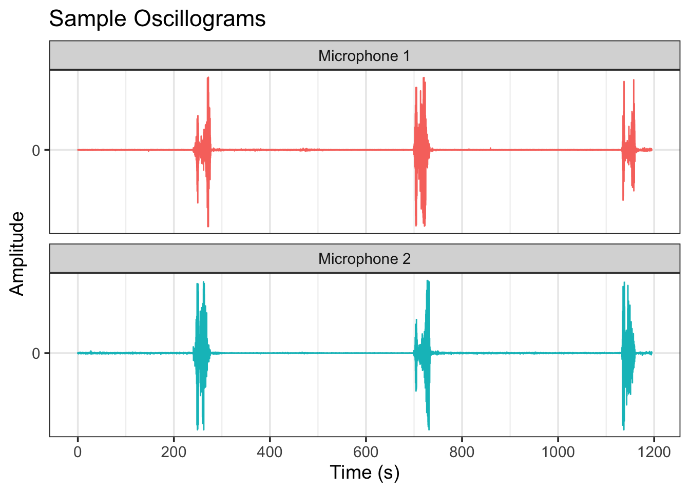
From Figure 6, we see that three boat passes are clearly identified by the recordings. For each boat pass, there are two main peaks. The first peak is from the boat accelerating from a stop, and the second peak is from the boat passing the microphone.
Spectrograms
Oscillograms are only one way of “seeing” sound. A more informative (but less intuitive) sound visualization method is the spectrogram. Spectrograms convey the spectral power (essentially the amplitude intensity) of the frequencies that comprise a sound in time, usually with a contour or image plot.
Generally, humans hear sounds from 20 Hz up to 20,000 Hz – above this threshold are the ultrasonic frequencies. For reference, the human voices typically fall between 80 Hz and 250 Hz.
Figure 7 is an Audacity spectrogram of the raw (48 kHz) audio for the first boat pass in Figure 6 as recorded by microphone 1. Note that the frequencies on the y-axis are log-scaled and only go to 24 kHz – half of the sample rate. That’s because the maximum frequency that can be properly resolved (the Nyquist frequency) is half of the sample rate of the instrument (Shannon, 1949). From the spectrogram, we see that the most powerful sound is below 1 kHz. We also see a “U” pattern in the frequency bands from Doppler shift associated with the relative movement of the boat toward, and then away, from the microphone as it passes. Though it wasn’t polished enough to include in this EDA, I am working on a speed estimator using Doppler shift as well.
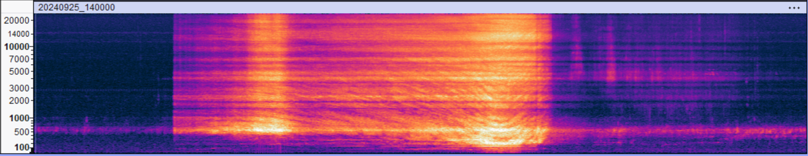
Sound Detection with seewave::timer()
seewave:timer() (Sueur et al., 2008) detects sound ‘events’ in an audio signal above a user-specified amplitude threshold. The audio wave is presented as an “absolute” (i.e., positive) envelope, which simplifies the analysis. I am applying a fairly strong smoothing to the envelope to reduce the number of peaks and choosing a minimum event duration of 15 seconds so that only the ‘big’ sounds are identified. seewave::timer() automatically generates a base R plot for detected events (Figure 8).
# Set up dual panel plot
par(mfrow = c(2, 1))
par(mar = c(5, 4, 2, 2))
t_1 <- seewave::timer(down_1,
envt = "abs",
threshold = threshold,
msmooth = msmooth,
dmin = dmin,
plot = TRUE)
t_2 <- seewave::timer(down_2,
envt = "abs",
threshold = threshold,
msmooth = msmooth,
dmin = dmin,
plot = TRUE)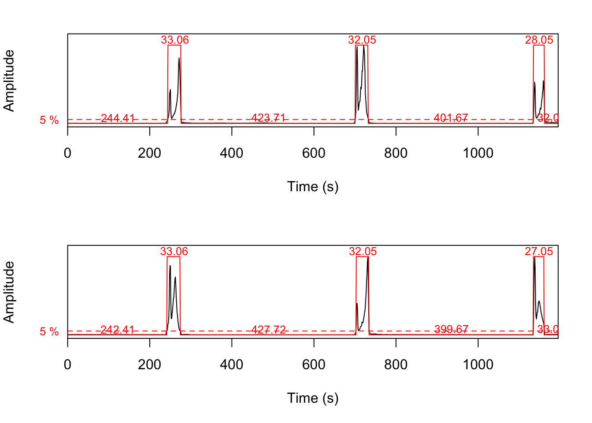
seewave::timer() sound events are used to extract time ranges from the downsampled audio files for peak amplitude identification. The goal is to determine the time stamp of the ‘loudest’ sound in each event. This is done with a for-loop that pulls the event times, scales them back up to the downsampled sample rate, and IDs the local maximums in the downsampled audio signals. Figure 9 shows the seewave::timer() plots, now with the identified peaks overlaid in purple.
Here’s the for-loop code:
# Extract sound event time ranges:
x <- t_1
ranges_1 <- tibble(
mic = "1",
event = seq_along(x$s.start),
start_sec = x$s.start,
end_sec = x$s.end,
start_ind = as.integer(trunc(start_sec * down_freq)),
end_ind = as.integer(trunc(end_sec * down_freq))
)
x <- t_2
ranges_2 <- tibble(
mic = "2",
event = seq_along(x$s.start),
start_sec = x$s.start,
end_sec = x$s.end,
start_ind = as.integer(trunc(start_sec * down_freq)),
end_ind = as.integer(trunc(end_sec * down_freq))
)
# Join into a single tibble
events <- bind_rows(ranges_1, ranges_2)
#### For-loop to identify peak amplitudes ####
# Generate empty list:
peak_list <- vector("list", nrow(events))
# Loop through events data frame:
for (i in seq_len(nrow(events))) {
mic_id <- events$mic[i]
signal <- signals[[mic_id]]
min <- events$start_ind[i]
max <- events$end_ind[i]
segment <- signal[min:max]
# Smoothing to match seewave::timer
env_vec <- as.vector(env(
wave = segment,
f = down_freq,
envt = envt,
msmooth = msmooth,
plot = FALSE,
norm = TRUE
))
# Find relative index in the envelope
peak_ind_rel_env <- which.max(env_vec)
# Scale to segment length
scale_factor <- length(segment) / length(env_vec)
peak_ind_rel <- round(peak_ind_rel_env * scale_factor)
# Map to global index
peak_ind <- peak_ind_rel + min - 1
peak_sec <- peak_ind / down_freq
# Output
peak_list[[i]] <- tibble(
mic = as.character(mic_id),
event = events$event[i],
peak_ind = as.integer(peak_ind),
peak_sec = peak_sec)
}
# Combine results
peaks <- bind_rows(peak_list)And the plots:
t1_peaks <- peaks |>
filter(mic == 1) |>
select(peak_sec) |>
pull()
t2_peaks <- peaks |>
filter(mic == 2) |>
select(peak_sec) |>
pull()
# Prep double panel base R plot
par(mfrow = c(2, 1))
par(mar = c(5, 4, 2, 2))
# Generate timer() plot again and annotate
seewave::timer(down_1,
envt = "abs",
threshold = threshold,
msmooth = msmooth,
dmin = dmin,
plot = TRUE,
xlab = "")
mtext("Mic 1", adj = 0)
abline(v = t1_peaks, col = "cyan3", lwd = 4, lty = 3)
seewave::timer(down_2,
envt = "abs",
threshold = threshold,
msmooth = msmooth,
dmin = dmin,
plot = TRUE)
mtext("Mic 2", adj = 0)
abline(v = t2_peaks, col = "cyan3", lwd = 4, lty = 3)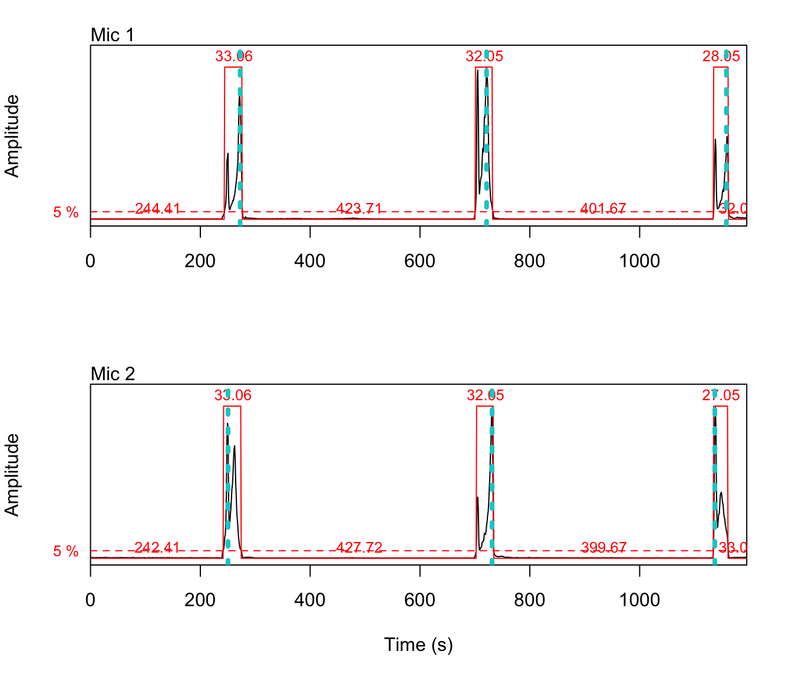
That looks pretty good! At least for these three events, the loop did it’s job.
Speed Calculation
Now the easy part: calculating speed from these amplitude peaks.
speeds <- peaks |>
select(mic,
event,
peak_sec) |>
pivot_wider(names_from = mic,
values_from = peak_sec,
names_prefix = "mic_") |>
mutate(delta_t = abs(mic_1 - mic_2),
speed_ms = ifelse(delta_t > 0, dist / delta_t, NA_real_),
speed_kmh = speed_ms * 3.6)
# Speed table
speeds |>
mutate(
across(where(is.numeric), ~ round(.x, 1))
) |>
kable(
col.names = c("event", "t_peak_mic_1", "t_peak_mic_2", "delta_t", "speed_ms", "speed_kmh")
)| event | t_peak_mic_1 | t_peak_mic_2 | delta_t | speed_ms | speed_kmh |
|---|---|---|---|---|---|
| 1 | 272.5 | 250.4 | 22 | 2.9 | 10.5 |
| 2 | 721.2 | 731.2 | 10 | 6.4 | 23.1 |
| 3 | 1157.9 | 1136.9 | 21 | 3.1 | 11.0 |
And there we go! Three boat speeds estimated from the pair of audio files without any user oversight. The estimated speeds range from 11 to 23 km/h, a bit lower than the true speed (28 km/h), but in the ballpark. For comparison, the manual speed estimates were closer, in the 22 to 28 km/h range.
To get the final “auto_est.csv” results, this process was run across all the pairs of audio files for the three days. It took about 3 minutes. To do this manually took about 6 hours. Ah, the power of automation.
Data Hygiene and Prep
Alright, now that you know how the sausage is made, let’s start working with the results datasets proper.
Manual Results
Not much to do for the manual data, but it can be slightly improved. Removing “#N/A”s that are coercing numeric variables to character and fixing the date.
man <- man |>
mutate(
date = as.Date(date, format = "%m/%d/%Y"),
dist_m = as.numeric(dist_m),
obs_kmh = as.numeric(obs_kmh),
pred_kmh = as.numeric(pred_kmh)
)
head(man)# A tibble: 6 × 7
date time dist_m pred_kmh obs_kmh type notes
<date> <time> <dbl> <dbl> <dbl> <chr> <chr>
1 2024-09-20 14:10:30 100 5.3 10 alum not our boat?
2 2024-09-20 14:25:09 100 6.6 10 alum <NA>
3 2024-09-20 14:34:22 100 5.4 10 alum not our boat
4 2024-09-20 14:42:22 100 6.6 10 alum not out boat
5 2024-09-20 14:49:58 100 13.5 20 alum <NA>
6 2024-09-20 14:59:40 100 10.9 20 alum not our boat Ready to roll.
Automated Results
We are going to start with the automatic speed results first – remember Table 3 from way back when? .
I was a bit liberal with all the date and time info. Let’s trim the table down to the essentials and take a peak at the summary:
# Format date and select desired variables
auto_trim <- auto |>
mutate(date = as.Date(event_datetime)) |>
select(date,
event_time,
event,
mic_1,
mic_2,
speed_kmh)
summary(auto_trim) date event_time event mic_1
Min. :2024-09-20 Length:145 Min. : 1.00 Min. : 1.001
1st Qu.:2024-09-20 Class1:hms 1st Qu.:12.00 1st Qu.: 302.506
Median :2024-09-25 Class2:difftime Median :24.00 Median : 623.043
Mean :2024-09-27 Mode :numeric Mean :24.45 Mean : 620.456
3rd Qu.:2024-10-04 3rd Qu.:35.00 3rd Qu.: 919.538
Max. :2024-10-04 Max. :58.00 Max. :1179.975
NA's :6 NA's :6 NA's :20
mic_2 speed_kmh
Min. : 21.03 Min. : 0.377
1st Qu.: 311.52 1st Qu.: 3.225
Median : 601.01 Median : 9.876
Mean : 603.87 Mean : 15.304
3rd Qu.: 899.50 3rd Qu.: 19.257
Max. :1193.00 Max. :123.856
NA's :12 NA's :27 There are 6 NAs for ‘date’, which occurs when both audio files had no sound events at all. There are 27 NAs for ‘speed_kmh’: the 6 non-event files, but also an additional 21 NAs from when one microphone picked up a sound event but not the other.
Let’s remove the non-event rows and then check that all the times are increasing:
# Filter non-event rows
auto_trim <- auto_trim |>
filter(!is.na(date))
# Make sure all times are increasing
auto_trim |>
group_by(date) |>
summarize(times_increasing = all(diff(event_time) > 0))# A tibble: 3 × 2
date times_increasing
<date> <lgl>
1 2024-09-20 TRUE
2 2024-09-25 FALSE
3 2024-10-04 TRUE Whoops, something is out of sequence on Sept 25. Let’s focus in:
auto_trim |>
group_by(date) |>
mutate(time_diff_ok = c(TRUE, diff(event_time) > 0)) |>
filter(!time_diff_ok)# A tibble: 1 × 7
# Groups: date [1]
date event_time event mic_1 mic_2 speed_kmh time_diff_ok
<date> <time> <dbl> <dbl> <dbl> <dbl> <lgl>
1 2024-09-25 14:52:43 19 763. NA NA FALSE Row 19 ‘event_time’ is out of sequence. Upon inspection, this is a quirk of the for-loop logic. A sound event is registered if either mic picks up a sound event. When one mic has a detection, the event_time defaults to that mic’s time index. However, if a sound is picked up by both mics the event_time is calculated as the average between the mic peak times. Thus, it’s possible that an event only detected by one mic could be placed out of sequence based on the averaging of a adjacent event. Something to keep an eye on, but only happened once in these results so probably not serious of a issue.
The next big challenge is matching up the speed estimates with the observations for error analysis. To help facilitate this, I’ll add an estimated direction of navigation (up/down) based which mic picked up the sound even first (mic_1 is upstream of mic_2), and an overall index row for easier referencing.
# Direction
auto_trim <- auto_trim |>
mutate(est_dir = case_when(
mic_1 < mic_2 ~ "down",
mic_1 > mic_2 ~ "up",
TRUE ~ NA_character_)
)
# Index
auto_trim <- auto_trim |>
mutate(index = 1:nrow(auto_trim)) |>
relocate(index, .before = date)
auto_trim |> mutate(
across(where(is.numeric), ~ round(.x, 1))) |>
kable() |>
kable_styling(full_width = FALSE) |>
scroll_box(height = "400px")| index | date | event_time | event | mic_1 | mic_2 | speed_kmh | est_dir |
|---|---|---|---|---|---|---|---|
| 1 | 2024-09-20 | 14:08:28 | 1 | 651.1 | 366.6 | 0.8 | up |
| 2 | 2024-09-20 | 14:10:09 | 2 | NA | 609.0 | NA | NA |
| 3 | 2024-09-20 | 14:25:12 | 3 | 292.5 | 332.6 | 5.6 | down |
| 4 | 2024-09-20 | 14:34:25 | 4 | 883.5 | 847.4 | 6.2 | up |
| 5 | 2024-09-20 | 14:42:22 | 5 | 122.2 | 163.3 | 5.4 | down |
| 6 | 2024-09-20 | 14:49:58 | 6 | 607.0 | 590.0 | 13.1 | up |
| 7 | 2024-09-20 | 14:59:41 | 7 | 1170.0 | 1193.0 | 9.7 | down |
| 8 | 2024-09-20 | 15:05:25 | 8 | 559.9 | 91.2 | 0.5 | up |
| 9 | 2024-09-20 | 15:10:35 | 9 | 711.2 | 558.9 | 1.5 | up |
| 10 | 2024-09-20 | 15:12:47 | 10 | 845.4 | 690.2 | 1.4 | up |
| 11 | 2024-09-20 | 15:14:34 | 11 | NA | 874.5 | NA | NA |
| 12 | 2024-09-20 | 15:20:47 | 12 | 35.1 | 60.1 | 8.9 | down |
| 13 | 2024-09-20 | 15:26:32 | 13 | 427.7 | 357.6 | 3.2 | up |
| 14 | 2024-09-20 | 15:26:51 | 14 | NA | 411.7 | NA | NA |
| 15 | 2024-09-20 | 15:41:51 | 15 | 104.2 | 119.2 | 14.9 | down |
| 16 | 2024-09-20 | 15:48:53 | 16 | 540.9 | 525.9 | 14.9 | up |
| 17 | 2024-09-20 | 15:50:15 | 17 | 625.0 | 605.0 | 11.2 | up |
| 18 | 2024-09-20 | 15:58:20 | 18 | 1086.8 | 1114.9 | 8.0 | down |
| 19 | 2024-09-20 | 16:03:29 | 19 | 389.7 | 29.0 | 0.6 | up |
| 20 | 2024-09-20 | 16:07:58 | 20 | 590.0 | 367.6 | 1.0 | up |
| 21 | 2024-09-20 | 16:11:33 | 21 | 786.3 | 601.0 | 1.2 | up |
| 22 | 2024-09-20 | 16:15:21 | 22 | 1066.8 | 775.3 | 0.8 | up |
| 23 | 2024-09-20 | 16:18:19 | 23 | 1122.9 | 1075.8 | 4.7 | up |
| 24 | 2024-09-20 | 16:18:32 | 24 | NA | 1112.9 | NA | NA |
| 25 | 2024-09-20 | 16:21:27 | 25 | 85.1 | 90.2 | 44.6 | down |
| 26 | 2024-09-20 | 16:22:15 | 26 | 140.2 | 130.2 | 22.3 | up |
| 27 | 2024-09-20 | 16:24:33 | 27 | 295.5 | 251.4 | 5.1 | up |
| 28 | 2024-09-20 | 16:25:27 | 28 | 348.6 | 305.5 | 5.2 | up |
| 29 | 2024-09-20 | 16:26:22 | 29 | 425.7 | 339.6 | 2.6 | up |
| 30 | 2024-09-20 | 16:31:37 | 30 | 960.6 | 434.7 | 0.4 | up |
| 31 | 2024-09-20 | 16:32:01 | 31 | NA | 721.2 | NA | NA |
| 32 | 2024-09-20 | 16:35:53 | 32 | NA | 953.6 | NA | NA |
| 33 | 2024-09-20 | 17:12:31 | 33 | 741.2 | 762.3 | 10.6 | down |
| 34 | 2024-09-20 | 17:17:57 | 34 | 1079.8 | 1075.8 | 55.8 | up |
| 35 | 2024-09-20 | 17:29:00 | 35 | 550.9 | 530.0 | 10.7 | up |
| 36 | 2024-09-20 | 17:31:01 | 36 | 662.0 | 660.2 | 123.9 | up |
| 37 | 2024-09-20 | 17:34:11 | 37 | 835.3 | 867.6 | 6.9 | down |
| 38 | 2024-09-20 | 17:35:16 | 38 | NA | 916.7 | NA | NA |
| 39 | 2024-09-25 | 13:08:46 | 1 | 535.9 | 517.9 | 13.7 | up |
| 40 | 2024-09-25 | 13:14:53 | 2 | 888.5 | 899.5 | 22.4 | down |
| 41 | 2024-09-25 | 13:18:01 | 3 | 1068.8 | 1093.8 | 9.9 | down |
| 42 | 2024-09-25 | 13:23:51 | 4 | 238.4 | 224.4 | 17.6 | up |
| 43 | 2024-09-25 | 13:30:03 | 5 | 598.0 | 609.0 | 22.4 | down |
| 44 | 2024-09-25 | 13:37:08 | 6 | 1037.7 | 1018.7 | 13.0 | up |
| 45 | 2024-09-25 | 13:43:55 | 7 | 229.4 | 242.4 | 19.0 | down |
| 46 | 2024-09-25 | 13:51:41 | 8 | 708.2 | 694.2 | 17.6 | up |
| 47 | 2024-09-25 | 13:56:58 | 9 | 936.6 | 1100.8 | 1.5 | down |
| 48 | 2024-09-25 | 13:58:07 | 10 | 1087.8 | NA | NA | NA |
| 49 | 2024-09-25 | 14:04:21 | 11 | 272.5 | 250.4 | 11.2 | up |
| 50 | 2024-09-25 | 14:12:06 | 12 | 721.2 | 731.2 | 24.7 | down |
| 51 | 2024-09-25 | 14:19:07 | 13 | 1157.9 | 1136.9 | 11.8 | up |
| 52 | 2024-09-25 | 14:25:07 | 14 | 302.5 | 311.5 | 27.4 | down |
| 53 | 2024-09-25 | 14:29:52 | 15 | 606.0 | 579.0 | 9.1 | up |
| 54 | 2024-09-25 | 14:33:44 | 16 | 820.4 | 829.4 | 27.4 | down |
| 55 | 2024-09-25 | 14:47:33 | 17 | 144.2 | 763.3 | 0.4 | down |
| 56 | 2024-09-25 | 14:54:06 | 18 | 518.9 | 1175.0 | 0.4 | down |
| 57 | 2024-09-25 | 14:52:43 | 19 | 763.3 | NA | NA | NA |
| 58 | 2024-09-25 | 14:59:26 | 20 | 1167.0 | NA | NA | NA |
| 59 | 2024-09-25 | 15:06:47 | 21 | 444.7 | 370.6 | 3.3 | up |
| 60 | 2024-09-25 | 15:12:41 | 22 | 749.3 | 774.3 | 9.9 | down |
| 61 | 2024-09-25 | 15:18:58 | 23 | 1150.9 | 1125.9 | 9.9 | up |
| 62 | 2024-09-25 | 15:24:21 | 24 | 234.4 | 289.5 | 4.5 | down |
| 63 | 2024-09-25 | 15:33:31 | 25 | 821.4 | 802.3 | 13.0 | up |
| 64 | 2024-09-25 | 15:39:39 | 26 | 1180.0 | 1180.0 | NA | NA |
| 65 | 2024-09-25 | 15:40:11 | 27 | 1.0 | 21.0 | 12.3 | down |
| 66 | 2024-09-25 | 15:47:28 | 28 | 474.8 | 422.7 | 4.7 | up |
| 67 | 2024-09-25 | 15:54:43 | 29 | 834.4 | 933.6 | 2.5 | down |
| 68 | 2024-09-25 | 15:55:19 | 30 | 919.5 | NA | NA | NA |
| 69 | 2024-09-25 | 16:02:30 | 31 | 157.3 | 143.2 | 17.6 | up |
| 70 | 2024-09-25 | 16:08:57 | 32 | 530.9 | 544.9 | 17.6 | down |
| 71 | 2024-09-25 | 16:15:35 | 33 | 945.6 | 925.5 | 12.3 | up |
| 72 | 2024-09-25 | 16:22:01 | 34 | 109.2 | 133.2 | 10.3 | down |
| 73 | 2024-09-25 | 16:28:30 | 35 | 514.9 | 505.8 | 27.4 | up |
| 74 | 2024-09-25 | 16:34:54 | 36 | 890.5 | 899.5 | 27.4 | down |
| 75 | 2024-09-25 | 16:37:40 | 37 | 1063.8 | 1057.8 | 41.2 | up |
| 76 | 2024-09-25 | 16:43:10 | 38 | 188.3 | 193.3 | 49.4 | down |
| 77 | 2024-09-25 | 16:48:08 | 39 | NA | 488.8 | NA | NA |
| 78 | 2024-09-25 | 17:15:31 | 40 | 995.7 | 867.5 | 1.9 | up |
| 79 | 2024-09-25 | 17:24:37 | 41 | 175.3 | 380.6 | 1.2 | down |
| 80 | 2024-09-25 | 17:26:26 | 42 | 386.6 | NA | NA | NA |
| 81 | 2024-09-25 | 17:47:48 | 43 | 509.3 | 427.3 | 3.0 | up |
| 82 | 2024-10-04 | 12:08:16 | 1 | 529.9 | 463.8 | 3.5 | up |
| 83 | 2024-10-04 | 12:11:13 | 2 | 660.1 | 686.1 | 8.9 | down |
| 84 | 2024-10-04 | 12:20:54 | 3 | 27.0 | 81.1 | 4.3 | down |
| 85 | 2024-10-04 | 12:33:19 | 4 | 816.4 | 783.3 | 7.0 | up |
| 86 | 2024-10-04 | 12:38:22 | 5 | 1023.7 | 1181.0 | 1.5 | down |
| 87 | 2024-10-04 | 12:39:35 | 6 | 1176.0 | NA | NA | NA |
| 88 | 2024-10-04 | 12:40:31 | 7 | 19.0 | 44.1 | 9.2 | down |
| 89 | 2024-10-04 | 12:44:23 | 8 | 297.5 | 230.4 | 3.4 | up |
| 90 | 2024-10-04 | 12:45:38 | 9 | 392.7 | 283.5 | 2.1 | up |
| 91 | 2024-10-04 | 12:48:27 | 10 | 647.1 | 367.6 | 0.8 | up |
| 92 | 2024-10-04 | 12:52:54 | 11 | 960.6 | 588.0 | 0.6 | up |
| 93 | 2024-10-04 | 12:57:43 | 12 | 1135.9 | 991.7 | 1.6 | up |
| 94 | 2024-10-04 | 12:58:43 | 13 | NA | 1123.9 | NA | NA |
| 95 | 2024-10-04 | 13:03:26 | 14 | 195.3 | 218.4 | 10.0 | down |
| 96 | 2024-10-04 | 13:09:42 | 15 | 589.0 | 577.0 | 19.3 | up |
| 97 | 2024-10-04 | 13:15:32 | 16 | 926.5 | 938.6 | 19.3 | down |
| 98 | 2024-10-04 | 13:23:28 | 17 | 213.4 | 203.3 | 23.1 | up |
| 99 | 2024-10-04 | 13:30:29 | 18 | 626.0 | 632.1 | 38.5 | down |
| 100 | 2024-10-04 | 13:33:48 | 19 | NA | 828.4 | NA | NA |
| 101 | 2024-10-04 | 13:40:26 | 20 | 28.0 | 24.0 | 57.8 | up |
| 102 | 2024-10-04 | 13:53:24 | 21 | 802.3 | 806.3 | 57.8 | down |
| 103 | 2024-10-04 | 13:55:12 | 22 | 920.5 | 903.5 | 13.6 | up |
| 104 | 2024-10-04 | 14:00:56 | 23 | 66.1 | 47.1 | 12.2 | up |
| 105 | 2024-10-04 | 14:06:03 | 24 | 357.6 | 368.6 | 21.0 | down |
| 106 | 2024-10-04 | 14:13:17 | 25 | 803.3 | 792.3 | 21.0 | up |
| 107 | 2024-10-04 | 14:19:27 | 26 | 1166.0 | 1170.0 | 57.8 | down |
| 108 | 2024-10-04 | 14:24:55 | 27 | 297.5 | 293.5 | 57.8 | up |
| 109 | 2024-10-04 | 14:32:22 | 28 | 726.2 | 759.3 | 7.0 | down |
| 110 | 2024-10-04 | 14:38:00 | 29 | 1087.8 | 1072.8 | 15.4 | up |
| 111 | 2024-10-04 | 14:43:50 | 30 | 226.4 | 234.4 | 28.9 | down |
| 112 | 2024-10-04 | 14:46:23 | 31 | 378.6 | 388.6 | 23.1 | down |
| 113 | 2024-10-04 | 14:52:07 | 32 | 732.2 | 723.2 | 25.7 | up |
| 114 | 2024-10-04 | 14:56:51 | 33 | 1009.7 | 1013.7 | 57.8 | down |
| 115 | 2024-10-04 | 15:03:04 | 34 | 186.3 | 182.3 | 57.8 | up |
| 116 | 2024-10-04 | 15:14:38 | 35 | 877.5 | 880.5 | 77.0 | down |
| 117 | 2024-10-04 | 15:29:04 | 36 | 562.9 | 526.9 | 6.4 | up |
| 118 | 2024-10-04 | 15:33:04 | 37 | 794.3 | 775.3 | 12.2 | up |
| 119 | 2024-10-04 | 15:36:50 | 38 | 1034.7 | 985.6 | 4.7 | up |
| 120 | 2024-10-04 | 15:37:34 | 39 | NA | 1054.8 | NA | NA |
| 121 | 2024-10-04 | 15:42:59 | 40 | 186.3 | 172.3 | 16.5 | up |
| 122 | 2024-10-04 | 15:48:40 | 41 | 514.9 | 525.9 | 21.0 | down |
| 123 | 2024-10-04 | 15:55:10 | 42 | 923.5 | 897.5 | 8.9 | up |
| 124 | 2024-10-04 | 16:01:13 | 43 | 87.1 | 60.1 | 8.6 | up |
| 125 | 2024-10-04 | 16:03:44 | 44 | 346.6 | 103.2 | 1.0 | up |
| 126 | 2024-10-04 | 16:07:54 | 45 | 623.0 | 326.5 | 0.8 | up |
| 127 | 2024-10-04 | 16:12:49 | 46 | 913.5 | 626.0 | 0.8 | up |
| 128 | 2024-10-04 | 16:15:05 | 47 | NA | 905.5 | NA | NA |
| 129 | 2024-10-04 | 16:20:48 | 48 | 36.1 | 61.1 | 9.2 | down |
| 130 | 2024-10-04 | 16:24:56 | 49 | 277.5 | 315.5 | 6.1 | down |
| 131 | 2024-10-04 | 16:27:30 | 50 | 456.8 | 444.7 | 19.3 | up |
| 132 | 2024-10-04 | 16:30:03 | 51 | 617.0 | 590.0 | 8.6 | up |
| 133 | 2024-10-04 | 16:35:59 | 52 | 948.6 | 969.6 | 11.0 | down |
| 134 | 2024-10-04 | 16:39:39 | 53 | NA | 1180.0 | NA | NA |
| 135 | 2024-10-04 | 16:46:53 | 54 | 605.0 | 221.4 | 0.6 | up |
| 136 | 2024-10-04 | 16:51:45 | 55 | 795.3 | 615.0 | 1.3 | up |
| 137 | 2024-10-04 | 16:55:01 | 56 | 999.7 | 802.3 | 1.2 | up |
| 138 | 2024-10-04 | 16:57:31 | 57 | 1107.9 | 995.7 | 2.1 | up |
| 139 | 2024-10-04 | 16:58:20 | 58 | NA | 1100.8 | NA | NA |
I’m happy with how this is looking. Let’s move to the observational data.
Observational Data
head(obs)# A tibble: 6 × 11
date event time_NDA time_SR boat_dist_m speed_kmh dir boat_type shaper
<dbl> <dbl> <time> <time> <dbl> <chr> <chr> <chr> <chr>
1 20240920 1 14:09:00 NA 100 10 up alum <NA>
2 20240920 2 14:24:31 NA 100 10 down alum <NA>
3 20240920 3 14:34:12 NA 100 10 up alum <NA>
4 20240920 4 14:42:20 NA 100 10 down alum <NA>
5 20240920 5 14:49:55 NA 100 20 up alum <NA>
6 20240920 6 14:59:35 NA 100 20 down alum <NA>
# ℹ 2 more variables: mic_dist_m <dbl>, notes <chr>Let’s make ‘date’ a date class.
obs <- obs |>
mutate(date = ymd(date)) |>
arrange(date)Speed is also in character class. Let’s check for non-numerics with some regex.
# Look for non-digits
obs |>
filter(!str_detect(speed_kmh, "\\d")) |>
select(speed_kmh) |>
pull() [1] "S" "S" "S" "M" "M" "S" "F" "M" "S" "S" "F" "F" "S"Right, there were some civilian boat passes interspersed in the trials. I sometimes added a qualitative speed (S = slow, M = medium, F = fast) for those. This is coercing the the speed_kmh variable to character. Lets split the speed column in two, one for numeric, one for character.
obs <- obs |>
mutate(
speed_kmh_num = as.numeric(speed_kmh),
speed_qual = if_else(is.na(speed_kmh_num), speed_kmh, NA_character_),
speed_kmh = speed_kmh_num
) |>
select(-speed_kmh_num) |>
relocate(speed_qual, .after = speed_kmh)There are two time columns of boat pass times, one for each observer. Times are generally close, but have some variability. I’ll leave both in for now, as I’m not sure which observer was doing a better job!
Are all the event times increasing?
obs |>
group_by(date) |>
summarize(across(c(time_NDA, time_SR), ~ all(diff(.x) > 0)))# A tibble: 4 × 3
date time_NDA time_SR
<date> <lgl> <lgl>
1 2024-09-20 TRUE NA
2 2024-09-25 TRUE TRUE
3 2024-10-04 NA TRUE
4 2024-10-09 NA TRUE All the time events are in order. However, we see that duplicate time observations are only available for Sept 25, and that there is an extra date included in the observations. We are only validating for the three days, so Oct 9 can be removed.
obs <- obs |>
filter(!date == "2024-10-09")Finally, lets add an index to number all observations sequentially.
obs <- obs |>
mutate(index = 1:nrow(obs)) |>
relocate(index, .before = event)
obs |> mutate(
across(where(is.numeric), ~ round(.x, 1))) |>
kable() |>
kable_styling(full_width = FALSE) |>
scroll_box(height = "400px")| date | index | event | time_NDA | time_SR | boat_dist_m | speed_kmh | speed_qual | dir | boat_type | shaper | mic_dist_m | notes |
|---|---|---|---|---|---|---|---|---|---|---|---|---|
| 2024-09-20 | 1 | 1 | 14:09:00 | NA | 100 | 10.0 | NA | up | alum | NA | 62.1 | NA |
| 2024-09-20 | 2 | 2 | 14:24:31 | NA | 100 | 10.0 | NA | down | alum | NA | 62.1 | NA |
| 2024-09-20 | 3 | 3 | 14:34:12 | NA | 100 | 10.0 | NA | up | alum | NA | 62.1 | NA |
| 2024-09-20 | 4 | 4 | 14:42:20 | NA | 100 | 10.0 | NA | down | alum | NA | 62.1 | NA |
| 2024-09-20 | 5 | 5 | 14:49:55 | NA | 100 | 20.0 | NA | up | alum | NA | 62.1 | NA |
| 2024-09-20 | 6 | 6 | 14:59:35 | NA | 100 | 20.0 | NA | down | alum | NA | 62.1 | NA |
| 2024-09-20 | 7 | 7 | 15:11:35 | NA | 100 | 17.0 | NA | up | alum | NA | 62.1 | NA |
| 2024-09-20 | 8 | 8 | 15:14:00 | NA | NA | NA | NA | NA | NA | NA | 62.1 | not our boat |
| 2024-09-20 | 9 | 9 | 15:20:44 | NA | 100 | 21.0 | NA | down | alum | NA | 62.1 | NA |
| 2024-09-20 | 10 | 10 | 15:26:55 | NA | 100 | 30.0 | NA | up | alum | NA | 62.1 | NA |
| 2024-09-20 | 11 | 11 | 15:41:50 | NA | 100 | 27.0 | NA | down | alum | NA | 62.1 | NA |
| 2024-09-20 | 12 | 12 | 15:48:48 | NA | 100 | 28.0 | NA | up | alum | NA | 62.1 | NA |
| 2024-09-20 | 13 | 13 | 15:50:34 | NA | NA | NA | NA | NA | NA | NA | 62.1 | not our boat |
| 2024-09-20 | 14 | 14 | 15:58:15 | NA | 60 | 10.0 | NA | down | alum | NA | 62.1 | NA |
| 2024-09-20 | 15 | 15 | 16:06:08 | NA | 60 | 10.0 | NA | up | alum | NA | 62.1 | NA |
| 2024-09-20 | 16 | 16 | 16:09:55 | NA | NA | NA | NA | NA | NA | NA | 62.1 | not our boat |
| 2024-09-25 | 17 | 1 | 12:48:39 | 12:49:00 | 100 | 6.0 | NA | up | wake | off | 68.7 | no wake |
| 2024-09-25 | 18 | 2 | 12:53:22 | 12:53:20 | 100 | 6.0 | NA | down | wake | off | 68.7 | no wake |
| 2024-09-25 | 19 | 3 | 12:56:30 | 12:56:50 | 60 | 5.5 | NA | up | wake | off | 68.7 | NA |
| 2024-09-25 | 20 | 4 | 12:59:00 | 12:59:10 | 60 | 6.0 | NA | down | wake | off | 68.7 | NA |
| 2024-09-25 | 21 | 5 | 13:02:44 | 13:02:45 | 30 | 6.0 | NA | up | wake | off | 68.7 | NA |
| 2024-09-25 | 22 | 6 | 13:05:08 | 13:05:20 | 30 | 6.0 | NA | down | wake | off | 68.7 | NA |
| 2024-09-25 | 23 | 7 | 13:08:48 | 13:08:50 | 100 | 27.0 | NA | up | wake | off | 68.7 | NA |
| 2024-09-25 | 24 | 8 | 13:15:07 | 13:14:55 | 100 | 27.0 | NA | down | wake | off | 68.7 | NA |
| 2024-09-25 | 25 | 9 | 13:18:23 | 13:18:10 | NA | NA | S | down | cruiser | NA | 68.7 | not our boat |
| 2024-09-25 | 26 | 10 | 13:23:40 | 13:23:50 | 100 | 18.0 | NA | up | wake | on | 68.7 | NA |
| 2024-09-25 | 27 | 11 | 13:30:12 | 13:30:12 | 100 | 18.0 | NA | down | wake | on | 68.7 | NA |
| 2024-09-25 | 28 | 12 | 13:36:59 | 13:36:59 | 60 | 18.0 | NA | up | wake | on | 68.7 | NA |
| 2024-09-25 | 29 | 13 | 13:43:45 | 13:43:45 | 60 | 18.0 | NA | down | wake | on | 68.7 | NA |
| 2024-09-25 | 30 | 14 | 13:51:34 | 13:51:34 | 30 | 18.0 | NA | up | wake | on | 68.7 | NA |
| 2024-09-25 | 31 | 15 | 13:58:07 | 13:57:07 | 30 | 18.0 | NA | down | wake | on | 68.7 | NA |
| 2024-09-25 | 32 | 16 | 14:04:26 | 14:04:20 | 30 | 27.0 | NA | up | wake | on | 68.7 | NA |
| 2024-09-25 | 33 | 17 | 14:12:02 | 14:12:02 | 30 | 27.0 | NA | down | wake | on | 68.7 | NA |
| 2024-09-25 | 34 | 18 | 14:19:12 | 14:19:12 | 60 | 27.0 | NA | up | wake | on | 68.7 | NA |
| 2024-09-25 | 35 | 19 | 14:24:59 | 14:24:59 | 60 | 27.0 | NA | down | wake | on | 68.7 | NA |
| 2024-09-25 | 36 | 20 | 14:29:45 | 14:29:45 | 60 | 27.0 | NA | up | wake | on | 68.7 | NA |
| 2024-09-25 | 37 | 21 | 14:33:39 | 14:33:39 | 60 | 27.0 | NA | down | wake | on | 68.7 | NA |
| 2024-09-25 | 38 | 22 | 14:41:56 | 14:42:00 | 100 | 10.0 | NA | up | wake | on | 68.7 | NA |
| 2024-09-25 | 39 | 23 | 14:48:40 | 14:48:45 | 100 | 10.0 | NA | down | wake | on | 68.7 | NA |
| 2024-09-25 | 40 | 24 | 14:52:55 | 14:52:55 | 100 | 27.0 | NA | up | wake | on | 68.7 | NA |
| 2024-09-25 | 41 | 25 | 14:59:24 | 14:59:28 | 100 | 27.0 | NA | down | wake | on | 68.7 | NA |
| 2024-09-25 | 42 | 26 | 15:07:05 | 15:07:05 | 60 | 10.0 | NA | up | wake | on | 68.7 | NA |
| 2024-09-25 | 43 | 27 | 15:12:34 | 15:12:34 | 60 | 10.0 | NA | down | wake | on | 68.7 | NA |
| 2024-09-25 | 44 | 28 | 15:18:52 | 15:18:57 | 30 | 10.0 | NA | up | wake | on | 68.7 | NA |
| 2024-09-25 | 45 | 29 | 15:24:32 | 15:24:40 | 30 | 10.0 | NA | down | wake | on | 68.7 | NA |
| 2024-09-25 | 46 | 30 | 15:33:21 | 15:33:21 | 100 | 18.0 | NA | up | wake | off | 68.7 | NA |
| 2024-09-25 | 47 | 31 | 15:40:09 | 15:40:09 | 100 | 18.0 | NA | down | wake | off | 68.7 | NA |
| 2024-09-25 | 48 | 32 | 15:47:43 | 15:47:43 | 60 | 18.0 | NA | up | wake | off | 68.7 | NA |
| 2024-09-25 | 49 | 33 | 15:55:21 | 15:55:21 | 60 | 18.0 | NA | down | wake | off | 68.7 | NA |
| 2024-09-25 | 50 | 34 | 16:02:25 | 16:02:25 | 30 | 18.0 | NA | up | wake | off | 68.7 | NA |
| 2024-09-25 | 51 | 35 | 16:08:53 | 16:08:10 | 30 | 18.0 | NA | down | wake | off | 68.7 | RBR tipped |
| 2024-09-25 | 52 | 36 | 16:15:35 | 16:15:35 | 60 | 27.0 | NA | up | wake | off | 68.7 | NA |
| 2024-09-25 | 53 | 37 | 16:22:03 | 16:22:03 | 60 | 27.0 | NA | down | wake | off | 68.7 | NA |
| 2024-09-25 | 54 | 38 | 16:28:28 | 16:28:28 | 30 | 27.0 | NA | up | wake | off | 68.7 | NA |
| 2024-09-25 | 55 | 39 | 16:34:51 | 16:34:51 | 30 | 27.0 | NA | down | wake | off | 68.7 | NA |
| 2024-09-25 | 56 | 40 | 16:37:17 | 16:37:17 | 65 | 55.0 | NA | up | wake | off | 68.7 | NA |
| 2024-09-25 | 57 | 41 | 16:43:00 | 16:43:20 | 30 | 57.0 | NA | down | wake | off | 68.7 | NA |
| 2024-10-04 | 58 | 1 | NA | 11:58:30 | 65 | NA | S | up | cruiser | NA | 64.3 | not our boat |
| 2024-10-04 | 59 | 2 | NA | 12:08:40 | 100 | 9.7 | NA | up | cruiser | NA | 64.3 | NA |
| 2024-10-04 | 60 | 3 | NA | 12:11:15 | 65 | NA | S | down | cruiser | NA | 64.3 | not our boat |
| 2024-10-04 | 61 | 4 | NA | 12:20:30 | 100 | 9.9 | NA | down | cruiser | NA | 64.3 | NA |
| 2024-10-04 | 62 | 5 | NA | 12:33:20 | 60 | 9.7 | NA | up | cruiser | NA | 64.3 | NA |
| 2024-10-04 | 63 | 6 | NA | 12:40:27 | 60 | 9.7 | NA | down | cruiser | NA | 64.3 | NA |
| 2024-10-04 | 64 | 7 | NA | 12:44:55 | 50 | NA | M | up | runabout | NA | 64.3 | not our boat |
| 2024-10-04 | 65 | 8 | NA | 12:46:25 | 80 | NA | M | up | pontoon | NA | 64.3 | not our boat |
| 2024-10-04 | 66 | 9 | NA | 12:50:40 | 30 | 9.5 | NA | up | cruiser | NA | 64.3 | NA |
| 2024-10-04 | 67 | 10 | NA | 12:56:15 | 40 | NA | S | down | runabout | NA | 64.3 | not our boat |
| 2024-10-04 | 68 | 11 | NA | 12:58:51 | 95 | NA | F | up | ski | NA | 64.3 | not our boat |
| 2024-10-04 | 69 | 12 | NA | 13:03:16 | 30 | 9.3 | NA | down | cruiser | NA | 64.3 | NA |
| 2024-10-04 | 70 | 13 | NA | 13:09:48 | 30 | 21.7 | NA | up | cruiser | NA | 64.3 | Big! |
| 2024-10-04 | 71 | 14 | NA | 13:15:29 | 30 | 20.1 | NA | down | cruiser | NA | 64.3 | Big! |
| 2024-10-04 | 72 | 15 | NA | 13:23:24 | 30 | 32.1 | NA | up | cruiser | NA | 64.3 | NA |
| 2024-10-04 | 73 | 16 | NA | 13:30:26 | 30 | 30.9 | NA | down | cruiser | NA | 64.3 | NA |
| 2024-10-04 | 74 | 17 | NA | 13:40:35 | 30 | 48.2 | NA | up | cruiser | NA | 64.3 | NA |
| 2024-10-04 | 75 | 18 | NA | 13:53:23 | 30 | 50.7 | NA | down | cruiser | NA | 64.3 | NA |
| 2024-10-04 | 76 | 19 | NA | 13:55:10 | 85 | NA | M | up | alum | NA | 64.3 | not our boat |
| 2024-10-04 | 77 | 20 | NA | 14:00:57 | 60 | 27.8 | NA | up | cruiser | NA | 64.3 | NA |
| 2024-10-04 | 78 | 21 | NA | 14:06:00 | 60 | 21.5 | NA | down | cruiser | NA | 64.3 | NA |
| 2024-10-04 | 79 | 22 | NA | 14:13:10 | 60 | 21.6 | NA | up | cruiser | NA | 64.3 | NA |
| 2024-10-04 | 80 | 23 | NA | 14:19:28 | 60 | 60.0 | NA | down | cruiser | NA | 64.3 | NA |
| 2024-10-04 | 81 | 24 | NA | 14:24:51 | 60 | 59.5 | NA | up | cruiser | NA | 64.3 | NA |
| 2024-10-04 | 82 | 25 | NA | 14:32:15 | 100 | 19.7 | NA | down | cruiser | NA | 64.3 | NA |
| 2024-10-04 | 83 | 26 | NA | 14:38:06 | 100 | 19.9 | NA | up | cruiser | NA | 64.3 | NA |
| 2024-10-04 | 84 | 27 | NA | 14:43:46 | 100 | 59.5 | NA | down | cruiser | NA | 64.3 | NA |
| 2024-10-04 | 85 | 28 | NA | 14:46:24 | 65 | NA | NA | down | alum | NA | 64.3 | not our boat |
| 2024-10-04 | 86 | 29 | NA | 14:52:18 | 100 | 62.1 | NA | up | cruiser | NA | 64.3 | NA |
| 2024-10-04 | 87 | 30 | NA | 14:56:50 | 60 | 61.7 | NA | down | cruiser | NA | 64.3 | NA |
| 2024-10-04 | 88 | 31 | NA | 15:03:03 | 30 | 61.1 | NA | up | cruiser | NA | 64.3 | NA |
| 2024-10-04 | 89 | 32 | NA | 15:11:12 | 60 | NA | NA | down | ski | NA | 64.3 | not our boat |
| 2024-10-04 | 90 | 33 | NA | 15:14:38 | 30 | 67.8 | NA | down | cruiser | NA | 64.3 | NA |
| 2024-10-04 | 91 | 34 | NA | 15:29:05 | 50 | NA | S | up | runabout | NA | 64.3 | not our boat |
| 2024-10-04 | 92 | 35 | NA | 15:33:00 | 30 | 11.2 | NA | up | cruiser | NA | 64.3 | NA |
| 2024-10-04 | 93 | 36 | NA | 15:37:21 | 30 | 11.5 | NA | down | cruiser | NA | 64.3 | NA |
| 2024-10-04 | 94 | 37 | NA | 15:43:00 | 30 | 18.6 | NA | up | cruiser | NA | 64.3 | NA |
| 2024-10-04 | 95 | 38 | NA | 15:48:43 | 30 | 23.1 | NA | down | cruiser | NA | 64.3 | NA |
| 2024-10-04 | 96 | 39 | NA | 15:55:13 | 60 | 11.6 | NA | up | cruiser | NA | 64.3 | NA |
| 2024-10-04 | 97 | 40 | NA | 16:01:35 | 60 | 11.6 | NA | down | cruiser | NA | 64.3 | NA |
| 2024-10-04 | 98 | 41 | NA | 16:05:37 | 60 | 22.0 | NA | up | cruiser | NA | 64.3 | NA |
| 2024-10-04 | 99 | 42 | NA | 16:10:24 | 100 | 64.1 | NA | down | cruiser | NA | 64.3 | NA |
| 2024-10-04 | 100 | 43 | NA | 16:15:10 | 100 | 67.1 | NA | up | cruiser | NA | 64.3 | NA |
| 2024-10-04 | 101 | 44 | NA | 16:20:50 | 100 | 22.0 | NA | down | cruiser | NA | 64.3 | NA |
| 2024-10-04 | 102 | 45 | NA | 16:24:48 | 35 | NA | S | down | runabout | NA | 64.3 | not our boat |
| 2024-10-04 | 103 | 46 | NA | 16:30:05 | 100 | 20.9 | NA | up | cruiser | NA | 64.3 | NA |
| 2024-10-04 | 104 | 47 | NA | 16:36:31 | 100 | 10.5 | NA | down | cruiser | NA | 64.3 | NA |
| 2024-10-04 | 105 | 48 | NA | 16:44:21 | 100 | 10.7 | NA | up | cruiser | NA | 64.3 | NA |
| 2024-10-04 | 106 | 49 | NA | 16:50:10 | 60 | 23.9 | NA | down | runabout | NA | 64.3 | NA |
| 2024-10-04 | 107 | 50 | NA | 16:53:22 | 60 | NA | F | down | cruiser | NA | 64.3 | knee boarder |
| 2024-10-04 | 108 | 51 | NA | 16:56:36 | 60 | 59.9 | NA | up | cruiser | NA | 64.3 | NA |
| 2024-10-04 | 109 | 52 | NA | 16:58:25 | 60 | NA | F | up | runabout | NA | 64.3 | not our boat |
Data Exploration
Now what do these numbers tell us?
Automated Estimates
How many sound events were detected by the mics?
nrow(auto_trim)[1] 139How many events yielded a speed estimate?
sum(!is.na(auto_trim$speed_kmh))[1] 118What percentage of detected sound events don’t have a speed estimate?
auto_trim |>
filter(is.na(speed_kmh)) |>
summarize("NAs" = n(), "%" = round((NAs / nrow(auto_trim) * 100), 1))# A tibble: 1 × 2
NAs `%`
<int> <dbl>
1 21 15.1Which mic picked up the most events?
auto_trim |>
summarize(across(c(mic_1 , mic_2), ~ sum(!is.na(.x))))# A tibble: 1 × 2
mic_1 mic_2
<int> <int>
1 125 133Mic 2 (downstream) is the winner. Perhaps this is a feature of slightly different positioning or bathymetry.
Let’s take a quick look at the distribution of automatically generated speed estimates.
auto_trim |>
filter(!is.na(speed_kmh)) |>
ggplot(aes(x = speed_kmh)) +
geom_histogram(binwidth = 1, col = "pink") +
labs(title = "Automated",
x = "Speed (km/h)",
y = "Count") +
theme_bw(base_size = 14)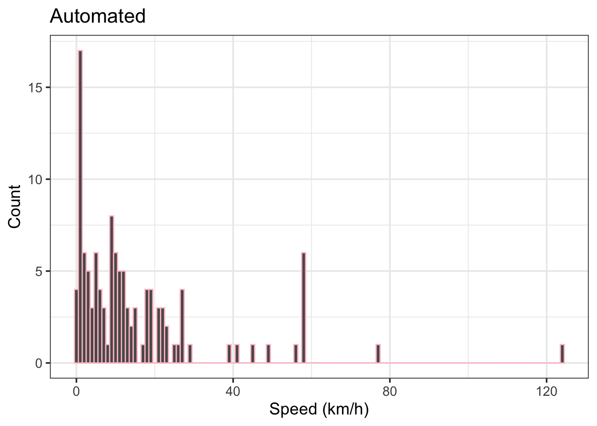
In Figure 10, there are a lot of estimates < 1 km/h which are probably not legitimate. It also looks like there is a very high speed estimate around 125 km/h.
auto_trim |>
select(speed_kmh) |>
slice_max(speed_kmh, n = 5) |>
round(1)# A tibble: 5 × 1
speed_kmh
<dbl>
1 124.
2 77
3 57.8
4 57.8
5 57.8Yep, 124 km/h boat speed is not impossible, but nearly double the actual speed ranges tested in these trials. But, because this is a method validation, need to leave this in the results.
Observations
How many actual boat passes were observed? This includes the control boats and any civilian boats that came through during the trials.
nrow(obs)[1] 109And of these 109 boat passes, how many were by the research team?
sum(!is.na(obs$speed_kmh))[1] 92We have 92 control passes to compare to the estimated results.
And the observational speed distribution:
obs |>
filter(!is.na(speed_kmh)) |>
ggplot(aes(x = speed_kmh)) +
geom_histogram(binwidth = 1, col = "pink") +
labs(title = "Observed",
x = "Speed (km/h)",
y = "Count") +
theme_bw(base_size = 14)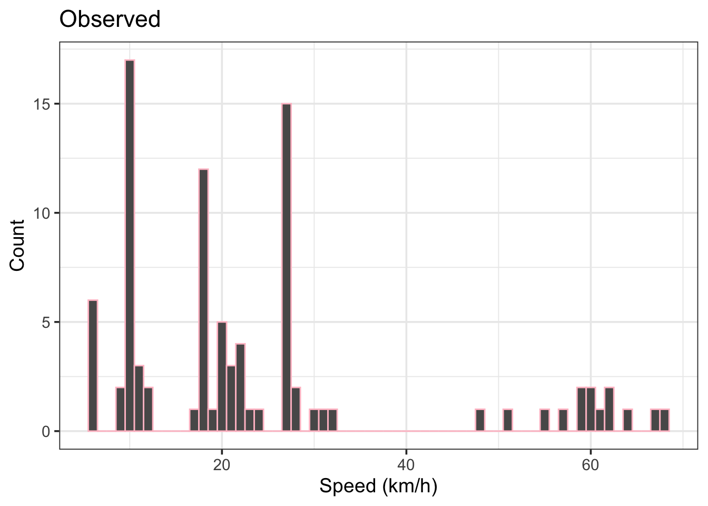
Figure 11 looks good. There is a trimodality in the distribution corresponding to slow (~ 10 km/h), medium (15 to 30 km/h), and fast (> 45 to 70 km/h) speed ranges of the trials. There are far fewer very slow speeds (< 5 km/h) compared to the automatic estimates.
obs |>
filter(!is.na(speed_kmh)) |>
mutate(speed_kmh = round(speed_kmh, digits = 0)) |>
count(speed_kmh, sort = TRUE) |>
head(n = 5)# A tibble: 5 × 2
speed_kmh n
<dbl> <int>
1 10 18
2 27 15
3 18 12
4 6 6
5 20 5Speeds of 10, 27, and 18 km/h were most common in controlled trials.
Matching Auto-Generated Speeds to Observations
There are 92 benchmark observations to compare to the 118 auto-identified speed estimates. But how do we know which events to compare? To do this, it’s necessary to match observed passes to the estimate events - which may be difficult to do automatically. Let’s see what we can do.
We’ll filter both the auto and observed results to remove rows without speed values.
auto_trim <- auto_trim |>
filter(!is.na(speed_kmh))
obs <- obs |>
filter(!is.na(speed_kmh))I’m going to simplify the double observation times for Sept 25 by averaging into a single column.
obs <- obs |>
mutate(
obs_time = case_when(
!is.na(time_NDA) & !is.na(time_SR) ~ (time_NDA + time_SR) / 2,
!is.na(time_NDA) & is.na(time_SR) ~ time_NDA,
is.na(time_NDA) & !is.na(time_SR) ~ time_SR),
time_NDA = NULL,
time_SR = NULL
) |>
relocate(obs_time, .after = event)Now some heavy lifting. Building up a greedy for-loop that will look for the closest time match between actual boat pass events and the auto-generated speed events. If the closest actual event is separated by more than 30 seconds from the auto-event, a penalty is applied that reduces the likelihood of the events being matched. The loop will also check if the estiamted direction of travel matches observation.
# Set time window (in seconds)
t_max <- 30
# Create all valid matches within time threshold
match_candidates <- inner_join(
auto_trim |>
select(auto_index = index,
date,
auto_time = event_time,
auto_speed_kmh = speed_kmh,
est_dir),
obs |>
select(obs_index = index,
date,
obs_time,
obs_speed_kmh = speed_kmh,
obs_dir = dir),
by = "date",
relationship = "many-to-many"
) |>
mutate(
time_diff = abs(as.numeric(difftime(auto_time, obs_time, units = "secs"))),
dir_penalty = if_else(est_dir != obs_dir, 15, 0),
match_score = time_diff + dir_penalty
) |>
filter(time_diff <= t_max) |>
arrange(match_score)
# Greedy loop to assign best unique matches
used_auto <- c()
used_obs <- c()
final_matches <- list()
for (i in seq_len(nrow(match_candidates))) {
row <- match_candidates[i, ]
if (!(row$auto_index %in% used_auto) && !(row$obs_index %in% used_obs)) {
final_matches[[length(final_matches) + 1]] <- row
used_auto <- c(used_auto, row$auto_index)
used_obs <- c(used_obs, row$obs_index)
}
}
# Final formatting
matched <- bind_rows(final_matches) |>
mutate(
dir_match = case_when(
obs_dir != est_dir ~ "no",
TRUE ~ "yes"
),
obs_dir = obs_dir,
speed_diff = auto_speed_kmh - obs_speed_kmh,
abs_speed_diff = abs(speed_diff)
) |>
select(
obs_index,
auto_index,
date,
obs_time,
auto_time,
time_diff,
obs_dir,
dir_match,
obs_speed_kmh,
auto_speed_kmh,
speed_diff,
abs_speed_diff
) |>
arrange(date, auto_time)matched |>
mutate(across(where(is.numeric), ~ round(.x, 1))) |>
kable() |>
kable_styling(full_width = FALSE) |>
scroll_box(height = "400px")| obs_index | auto_index | date | obs_time | auto_time | time_diff | obs_dir | dir_match | obs_speed_kmh | auto_speed_kmh | speed_diff | abs_speed_diff |
|---|---|---|---|---|---|---|---|---|---|---|---|
| 3 | 4 | 2024-09-20 | 14:34:12.0 | 14:34:25 | 13.0 | up | yes | 10.0 | 6.2 | -3.8 | 3.8 |
| 4 | 5 | 2024-09-20 | 14:42:20.0 | 14:42:22 | 2.0 | down | yes | 10.0 | 5.4 | -4.6 | 4.6 |
| 5 | 6 | 2024-09-20 | 14:49:55.0 | 14:49:58 | 3.0 | up | yes | 20.0 | 13.1 | -6.9 | 6.9 |
| 6 | 7 | 2024-09-20 | 14:59:35.0 | 14:59:41 | 6.0 | down | yes | 20.0 | 9.7 | -10.3 | 10.3 |
| 9 | 12 | 2024-09-20 | 15:20:44.0 | 15:20:47 | 3.0 | down | yes | 21.0 | 8.9 | -12.1 | 12.1 |
| 10 | 13 | 2024-09-20 | 15:26:55.0 | 15:26:32 | 23.0 | up | yes | 30.0 | 3.2 | -26.8 | 26.8 |
| 11 | 15 | 2024-09-20 | 15:41:50.0 | 15:41:51 | 1.0 | down | yes | 27.0 | 14.9 | -12.1 | 12.1 |
| 12 | 16 | 2024-09-20 | 15:48:48.0 | 15:48:53 | 5.0 | up | yes | 28.0 | 14.9 | -13.1 | 13.1 |
| 14 | 18 | 2024-09-20 | 15:58:15.0 | 15:58:20 | 5.0 | down | yes | 10.0 | 8.0 | -2.0 | 2.0 |
| 23 | 39 | 2024-09-25 | 13:08:49.0 | 13:08:46 | 3.0 | up | yes | 27.0 | 13.7 | -13.3 | 13.3 |
| 24 | 40 | 2024-09-25 | 13:15:01.0 | 13:14:53 | 8.0 | down | yes | 27.0 | 22.4 | -4.6 | 4.6 |
| 26 | 42 | 2024-09-25 | 13:23:45.0 | 13:23:51 | 6.0 | up | yes | 18.0 | 17.6 | -0.4 | 0.4 |
| 27 | 43 | 2024-09-25 | 13:30:12.0 | 13:30:03 | 9.0 | down | yes | 18.0 | 22.4 | 4.4 | 4.4 |
| 28 | 44 | 2024-09-25 | 13:36:59.0 | 13:37:08 | 9.0 | up | yes | 18.0 | 13.0 | -5.0 | 5.0 |
| 29 | 45 | 2024-09-25 | 13:43:45.0 | 13:43:55 | 10.0 | down | yes | 18.0 | 19.0 | 1.0 | 1.0 |
| 30 | 46 | 2024-09-25 | 13:51:34.0 | 13:51:41 | 7.0 | up | yes | 18.0 | 17.6 | -0.4 | 0.4 |
| 32 | 49 | 2024-09-25 | 14:04:23.0 | 14:04:21 | 2.0 | up | yes | 27.0 | 11.2 | -15.8 | 15.8 |
| 33 | 50 | 2024-09-25 | 14:12:02.0 | 14:12:06 | 4.0 | down | yes | 27.0 | 24.7 | -2.3 | 2.3 |
| 34 | 51 | 2024-09-25 | 14:19:12.0 | 14:19:07 | 5.0 | up | yes | 27.0 | 11.8 | -15.2 | 15.2 |
| 35 | 52 | 2024-09-25 | 14:24:59.0 | 14:25:07 | 8.0 | down | yes | 27.0 | 27.4 | 0.4 | 0.4 |
| 36 | 53 | 2024-09-25 | 14:29:45.0 | 14:29:52 | 7.0 | up | yes | 27.0 | 9.1 | -17.9 | 17.9 |
| 37 | 54 | 2024-09-25 | 14:33:39.0 | 14:33:44 | 5.0 | down | yes | 27.0 | 27.4 | 0.4 | 0.4 |
| 42 | 59 | 2024-09-25 | 15:07:05.0 | 15:06:47 | 18.0 | up | yes | 10.0 | 3.3 | -6.7 | 6.7 |
| 43 | 60 | 2024-09-25 | 15:12:34.0 | 15:12:41 | 7.0 | down | yes | 10.0 | 9.9 | -0.1 | 0.1 |
| 44 | 61 | 2024-09-25 | 15:18:54.5 | 15:18:58 | 3.5 | up | yes | 10.0 | 9.9 | -0.1 | 0.1 |
| 45 | 62 | 2024-09-25 | 15:24:36.0 | 15:24:21 | 15.0 | down | yes | 10.0 | 4.5 | -5.5 | 5.5 |
| 46 | 63 | 2024-09-25 | 15:33:21.0 | 15:33:31 | 10.0 | up | yes | 18.0 | 13.0 | -5.0 | 5.0 |
| 47 | 65 | 2024-09-25 | 15:40:09.0 | 15:40:11 | 2.0 | down | yes | 18.0 | 12.3 | -5.7 | 5.7 |
| 48 | 66 | 2024-09-25 | 15:47:43.0 | 15:47:28 | 15.0 | up | yes | 18.0 | 4.7 | -13.3 | 13.3 |
| 50 | 69 | 2024-09-25 | 16:02:25.0 | 16:02:30 | 5.0 | up | yes | 18.0 | 17.6 | -0.4 | 0.4 |
| 51 | 70 | 2024-09-25 | 16:08:31.5 | 16:08:57 | 25.5 | down | yes | 18.0 | 17.6 | -0.4 | 0.4 |
| 52 | 71 | 2024-09-25 | 16:15:35.0 | 16:15:35 | 0.0 | up | yes | 27.0 | 12.3 | -14.7 | 14.7 |
| 53 | 72 | 2024-09-25 | 16:22:03.0 | 16:22:01 | 2.0 | down | yes | 27.0 | 10.3 | -16.7 | 16.7 |
| 54 | 73 | 2024-09-25 | 16:28:28.0 | 16:28:30 | 2.0 | up | yes | 27.0 | 27.4 | 0.4 | 0.4 |
| 55 | 74 | 2024-09-25 | 16:34:51.0 | 16:34:54 | 3.0 | down | yes | 27.0 | 27.4 | 0.4 | 0.4 |
| 56 | 75 | 2024-09-25 | 16:37:17.0 | 16:37:40 | 23.0 | up | yes | 55.0 | 41.2 | -13.8 | 13.8 |
| 57 | 76 | 2024-09-25 | 16:43:10.0 | 16:43:10 | 0.0 | down | yes | 57.0 | 49.4 | -7.6 | 7.6 |
| 59 | 82 | 2024-10-04 | 12:08:40.0 | 12:08:16 | 24.0 | up | yes | 9.7 | 3.5 | -6.2 | 6.2 |
| 61 | 84 | 2024-10-04 | 12:20:30.0 | 12:20:54 | 24.0 | down | yes | 9.9 | 4.3 | -5.6 | 5.6 |
| 62 | 85 | 2024-10-04 | 12:33:20.0 | 12:33:19 | 1.0 | up | yes | 9.7 | 7.0 | -2.7 | 2.7 |
| 63 | 88 | 2024-10-04 | 12:40:27.0 | 12:40:31 | 4.0 | down | yes | 9.7 | 9.2 | -0.5 | 0.5 |
| 69 | 95 | 2024-10-04 | 13:03:16.0 | 13:03:26 | 10.0 | down | yes | 9.3 | 10.0 | 0.7 | 0.7 |
| 70 | 96 | 2024-10-04 | 13:09:48.0 | 13:09:42 | 6.0 | up | yes | 21.7 | 19.3 | -2.4 | 2.4 |
| 71 | 97 | 2024-10-04 | 13:15:29.0 | 13:15:32 | 3.0 | down | yes | 20.1 | 19.3 | -0.8 | 0.8 |
| 72 | 98 | 2024-10-04 | 13:23:24.0 | 13:23:28 | 4.0 | up | yes | 32.1 | 23.1 | -9.0 | 9.0 |
| 73 | 99 | 2024-10-04 | 13:30:26.0 | 13:30:29 | 3.0 | down | yes | 30.9 | 38.5 | 7.6 | 7.6 |
| 74 | 101 | 2024-10-04 | 13:40:35.0 | 13:40:26 | 9.0 | up | yes | 48.2 | 57.8 | 9.6 | 9.6 |
| 75 | 102 | 2024-10-04 | 13:53:23.0 | 13:53:24 | 1.0 | down | yes | 50.7 | 57.8 | 7.1 | 7.1 |
| 77 | 104 | 2024-10-04 | 14:00:57.0 | 14:00:56 | 1.0 | up | yes | 27.8 | 12.2 | -15.6 | 15.6 |
| 78 | 105 | 2024-10-04 | 14:06:00.0 | 14:06:03 | 3.0 | down | yes | 21.5 | 21.0 | -0.5 | 0.5 |
| 79 | 106 | 2024-10-04 | 14:13:10.0 | 14:13:17 | 7.0 | up | yes | 21.6 | 21.0 | -0.6 | 0.6 |
| 80 | 107 | 2024-10-04 | 14:19:28.0 | 14:19:27 | 1.0 | down | yes | 60.0 | 57.8 | -2.2 | 2.2 |
| 81 | 108 | 2024-10-04 | 14:24:51.0 | 14:24:55 | 4.0 | up | yes | 59.5 | 57.8 | -1.7 | 1.7 |
| 82 | 109 | 2024-10-04 | 14:32:15.0 | 14:32:22 | 7.0 | down | yes | 19.7 | 7.0 | -12.7 | 12.7 |
| 83 | 110 | 2024-10-04 | 14:38:06.0 | 14:38:00 | 6.0 | up | yes | 19.9 | 15.4 | -4.5 | 4.5 |
| 84 | 111 | 2024-10-04 | 14:43:46.0 | 14:43:50 | 4.0 | down | yes | 59.5 | 28.9 | -30.6 | 30.6 |
| 86 | 113 | 2024-10-04 | 14:52:18.0 | 14:52:07 | 11.0 | up | yes | 62.1 | 25.7 | -36.4 | 36.4 |
| 87 | 114 | 2024-10-04 | 14:56:50.0 | 14:56:51 | 1.0 | down | yes | 61.7 | 57.8 | -3.9 | 3.9 |
| 88 | 115 | 2024-10-04 | 15:03:03.0 | 15:03:04 | 1.0 | up | yes | 61.1 | 57.8 | -3.3 | 3.3 |
| 90 | 116 | 2024-10-04 | 15:14:38.0 | 15:14:38 | 0.0 | down | yes | 67.8 | 77.0 | 9.2 | 9.2 |
| 92 | 118 | 2024-10-04 | 15:33:00.0 | 15:33:04 | 4.0 | up | yes | 11.2 | 12.2 | 1.0 | 1.0 |
| 94 | 121 | 2024-10-04 | 15:43:00.0 | 15:42:59 | 1.0 | up | yes | 18.6 | 16.5 | -2.1 | 2.1 |
| 95 | 122 | 2024-10-04 | 15:48:43.0 | 15:48:40 | 3.0 | down | yes | 23.1 | 21.0 | -2.1 | 2.1 |
| 96 | 123 | 2024-10-04 | 15:55:13.0 | 15:55:10 | 3.0 | up | yes | 11.6 | 8.9 | -2.7 | 2.7 |
| 97 | 124 | 2024-10-04 | 16:01:35.0 | 16:01:13 | 22.0 | down | no | 11.6 | 8.6 | -3.0 | 3.0 |
| 101 | 129 | 2024-10-04 | 16:20:50.0 | 16:20:48 | 2.0 | down | yes | 22.0 | 9.2 | -12.8 | 12.8 |
| 103 | 132 | 2024-10-04 | 16:30:05.0 | 16:30:03 | 2.0 | up | yes | 20.9 | 8.6 | -12.3 | 12.3 |
Phew, I think that worked! We have merged the speed auto-estimates with their nearest temporal neighbour from the observations, and calculated differences in time and speed that can be used for error assessment.
The auto-matching loop yielded 67 matches out of 92 controlled boat passes (72.8%). Not great, but not terrible either.
There was 1 match that did not agree on direction of navigation, and the maximum time difference between matched events was 25.5 seconds, which is definitely reasonable.
Speed Prediction Error Assessment
The first component of this project was to develop an automated workflow to extract sound events from the audio files and calculate boat speed estimates. This has been done, but how close are those estimates? Does the method need fine-tuning? And is it worth investing in more recording devices for this coming summer?
The goal is to determine the root mean square error (RMSE) and mean absolute error (MAE) of the automatic speed estimates, by comparing the predicted values to the observed values. We’ll also run linear regression analyses for the predicted vs observed and check the R2 values. We’ll do the same for the manual estimates and see which approach fared better.
Manual Speed Estimate Error
# Filter NAs for Metrics funcitons
man <- man |>
filter(!is.na(obs_kmh))
man_rmse <- round(Metrics::rmse(man$obs_kmh, man$pred_kmh), 2)
man_mae <- round(Metrics::mae(man$obs_kmh, man$pred_kmh), 2)
# Linear regression
man_mod <- lm(man$pred_kmh ~ man$obs_kmh, data = man)
# Pull R2
man_sum <- summary(man_mod)
man_r2 <- round(man_sum$adj.r.squared, 2)The manual speed estimates yielded RMSE = 12.49 km/h, MAE = 7.12 km/h, and an R2adj = 0.76.
Automated Speed Estimate Error
auto_rmse <- round(Metrics::rmse(matched$obs_speed_kmh, matched$auto_speed_kmh), 2)
auto_mae <- round(Metrics::mae(matched$obs_speed_kmh, matched$auto_speed_kmh), 2)
# Linear regression
auto_mod <- lm(auto_speed_kmh ~ obs_speed_kmh, data = matched)
# Pull R2
auto_sum <- summary(auto_mod)
auto_r2 <- round(auto_sum$adj.r.squared, 2)The automated speed estimates yielded RMSE = 10.22 km/h, MAE = 7.06 km/h, and an R2adj = 0.75.
Visualizations
1-to-1 plots
We can compare predicted vs observed results with 1 to 1 plots.
# Manual plot
man_n <- nrow(man)
man_plot <- man |>
ggplot(aes(x = obs_kmh, y = pred_kmh)) +
geom_abline(slope = 1, intercept = 0, linewidth = 0.8, col = "red") +
geom_point(size = 3, pch = 19, alpha = 0.2) +
geom_smooth(method = "lm", se = FALSE, linewidth = 1, lty = 2, col = "gray30") +
xlim(0, 130) +
ylim(0, 130) +
labs(title = "Manual",
x = "Observed speed (km/h)",
y = "Predicted speed (km/h)") +
annotate("text", x = 0, y = 110, hjust = 0,
label = paste0(
"\nRMSE = ", man_rmse,
"\nMAE = ", man_mae,
"\nR2 = ", man_r2,
"\nn = ", man_n)
) +
theme_classic(base_size = 14) +
theme(axis.text = element_text(color = "black")
)
# Automated plot
auto_n <- length(final_matches)
# 1 to 1 plot of predicted vs observed
auto_plot <- matched |>
ggplot(aes(x = obs_speed_kmh, y = auto_speed_kmh)) +
geom_abline(slope = 1, intercept = 0, linewidth = 0.8, col = "red") +
geom_point(size = 3, pch = 19, alpha = 0.2) +
geom_smooth(method = "lm", se = FALSE, linewidth = 1, lty = 2, col = "gray30") +
xlim(0, 130) +
ylim(0, 130) +
labs(title = "Automated",
x = "Observed speed (km/h)",
y = "Predicted speed (km/h)") +
annotate("text", x = 0, y = 110, hjust = 0,
label = paste0(
"\nRMSE = ", auto_rmse,
"\nMAE = ", auto_mae,
"\nR2 = ", auto_r2,
"\nn = ", auto_n)
) +
theme_classic(base_size = 14) +
theme(axis.text = element_text(color = "black")
)
# patchwork combo plot
(man_plot + auto_plot) +
plot_annotation(tag_levels = "A")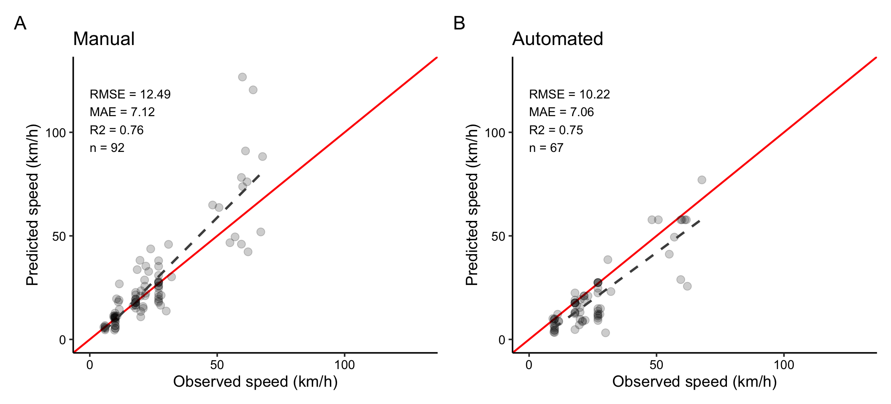
The manual and automated 1-to-1 plots in Figure 12 are surprisingly similar. The manual method tended to overestimate speed, while the automated method underestimated. It appears that the manual plot is really thrown off by two high estimates. The automated method only matched 67 of the 92 boat passes though, and the logic of the matching loop likely prevented very high and very low estimates.
It’s appears that prediction error increases at higher speeds. We also notice that there are few trial runs between 30 and 50 km/h. Hard to validate if you don’t have a reference in that speed range.
Direction of Travel
Perhaps the navigation direction (upstream vs downstream) has an impact on estimation accuracy? Let’s check this for the automated results.
matched |> mutate(
dir_label = recode(obs_dir,
"down" = "Downstream",
"up" = "Upstream")) |>
ggplot(aes(x = dir_label,
y = speed_diff,
fill = dir_label)) +
geom_violin(show.legend = FALSE,
alpha = 0.1) +
geom_boxplot(show.legend = FALSE,
alpha = 0.3,
outliers = FALSE) +
geom_jitter(aes(shape = dir_label),
fill = NA,
width = 0.08,
alpha = 0.9,
size = 2,
show.legend = FALSE) +
scale_shape_manual(values = c("Downstream" = 25, "Upstream" = 24)) +
labs(title = "Prediction Error by Direction of Travel - Automated",
x = NULL,
y = "Prediction error (km/h)") +
theme_bw(base_size = 14) +
theme(
axis.text.x = element_text(size = 14),
axis.title.y = element_text(size = 14)
)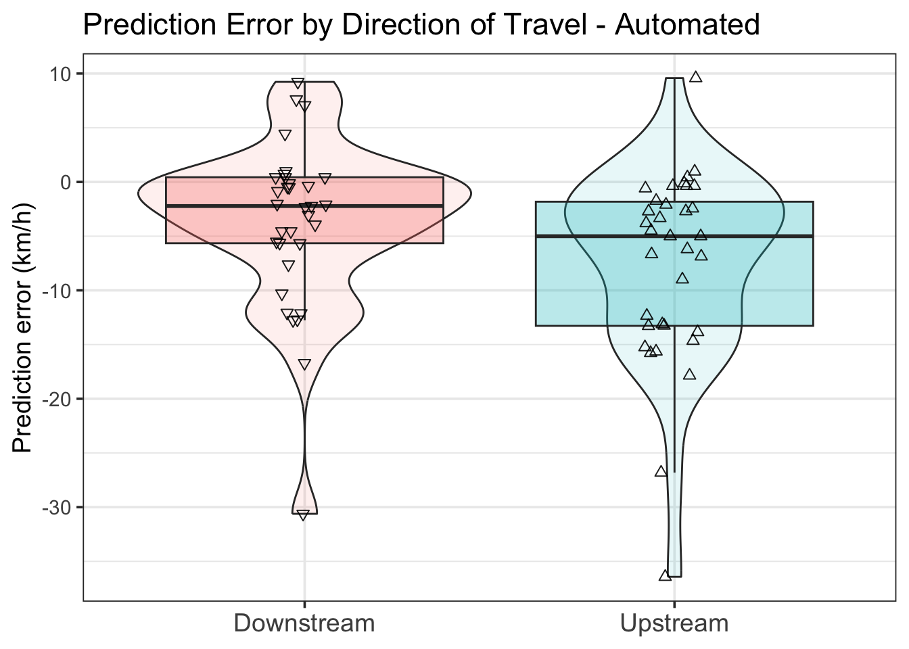
We see from Figure 13 that median prediction error is lower for boats moving downstream compared to upstream, and again that speed underestimation is most common. Perhaps the bathymetry around the mics introduces a bias in directional sound propagation?
Prediction Error by Trial Day
Finally, let’s consider each day separately. Most importantly, this will indicate if boat type influences speed estimation.
counts <- matched |>
count(date) |>
mutate(date = factor(date))
matched |>
mutate(date = factor(date)) |>
ggplot(aes(x = date,
y = speed_diff,
fill = date)) +
geom_violin(show.legend = FALSE,
alpha = 0.1) +
geom_boxplot(show.legend = FALSE,
alpha = 0.2,
outliers = FALSE) +
geom_jitter(fill = NA,
width = 0.08,
alpha = 0.5,
size = 2,
show.legend = FALSE) +
geom_text(data = counts, aes(x = date, y = 17, label = paste0("n = ", n)),
inherit.aes = FALSE, size = 4) +
annotate("text", x = 1, y = 13, label = "Alumnium 14 ft") +
annotate("text", x = 2, y = 13, label = "Wake surf 23 ft") +
annotate("text", x = 3, y = 13, label = "Cruiser 28 ft") +
labs(title = "Boat Speed Prediction Error by Day - Automated",
x = "Date",
y = "Prediction error (km/h)") +
theme_bw(base_size = 14)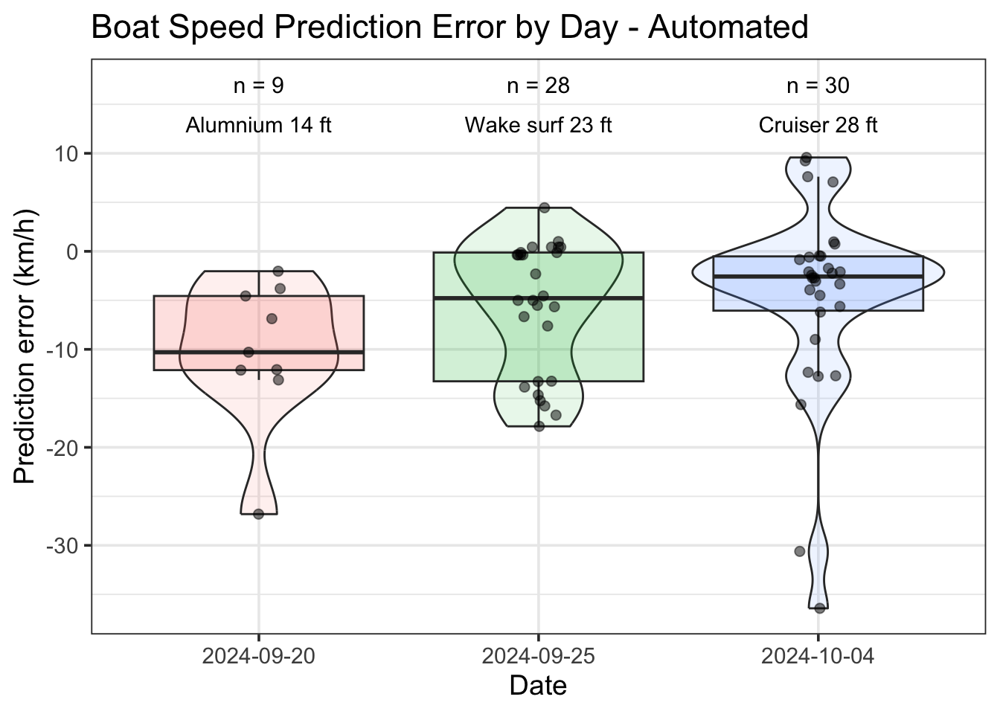
It appears that prediction accuracy improved as the trials went on. This may be because there sample size was larger for each subsequent day, or maybe we were getting better at our instrument deployments and observations. It may be influenced by the boat type being used: Sept 20 was a small vessel with a modest engine, while the other two boats had very powerful - and loud - engines.
Conclusion
This EDA sought to test if underwater acoustic recordings can be used for accurate estimation of boat speed and if it can be done reliably without user oversight. The broad takeaway from this analysis is that, yes, I was able to produce reasonable speed estimates; however, the method is not currently accurate enough to be put into practice. But it shows promise. Honestly, I’m a little shocked that the automated method had lower error metrics (RMSE = 10.22 km/h, MAE = 7.06 km/h) than the manual approach (RMSE = 12.49 km/h, MAE = 7.12 km/h). But take these results with a grain of salt, as the manual approach had no temporal limits on the matching. If the two obvious outliers are removed from the manual results, it shows better than the automated approach. And, the manual approach had an estimate for every boat pass, while the automated method only generated estimates for 73% of passes.
Another key consideration is that these trials were purposely designed to limit interference from other boats – basically ideal testing conditions. Both methods would likely yield considerably poorer results during periods of high traffic.
As currently developed, this automated boat speed estimator can provide moderate accuracy of boat speed and would be appropriate for categories of speed (e.g., between 10 and 30 km/h). However, it is not able generate sufficiently accurate speeds estimates suitable as input for numeric models of boat wake generation.
And so:
RQ1: Yes, we can definitely estimate boat speed from underwater acoustic recordings.
RQ2: Yes, the process can be fully-automated in R and yield similar accuracy to a manual approach.
RQ3: No, as currently developed, the automated method is not yet ready for upscaling and adoption for 2025. But, I’ve got another 6 weeks to refine it…
Artificial Intelligence Usage Statement
Some of the custom functions developed for my research are at a level of complexity beyond my programming skills. I have troubleshooted many of these functions with the assistance of OpenAI’s ChatGPT (OpenAI, 2024). I have found this process to be rewarding, but also demanding, and I have full records of these coding sessions. These custom functions have allowed me to produce the results that I then personally prepared for this report.
References
Audacity Team. (2025). Audacity: Free audio editor and recorder. https://www.audacityteam.org/
Forlini, C., Qayyum, R., Malej, M., Lam, M.-A. Y.-H., Shi, F., Angelini, C., & Sheremet, A. (2021). On the problem of modeling the boat wake climate: The Florida Intracoastal Waterway. Journal of Geophysical Research: Oceans, 126(2), e2020JC016676. https://doi.org/10.1029/2020JC016676
Gabel, F., Lorenz, S., & Stoll, S. (2017). Effects of ship-induced waves on aquatic ecosystems. Science of The Total Environment, 601-602, 926–939. https://doi.org/10.1016/j.scitotenv.2017.05.206
Hill, A. P., Prince, P., Piña Covarrubias, E., Doncaster, C. P., Snaddon, J. L., & Rogers, A. (2018). AudioMoth: Evaluation of a smart open acoustic device for monitoring biodiversity and the environment. Methods in Ecology and Evolution, 9(5), 1199–1211. https://doi.org/10.1111/2041-210X.12955
Lamont, T. A. C., Chapuis, L., Williams, B., Dines, S., Gridley, T., Frainer, G., Fearey, J., Maulana, P. B., Prasetya, M. E., Jompa, J., Smith, D. J., & Simpson, S. D. (2022). HydroMoth: Testing a prototype low-cost acoustic recorder for aquatic environments. Remote Sensing in Ecology and Conservation, 8(3), 362–378. https://doi.org/10.1002/rse2.249
OpenAI. (2024). ChatGPT (april 2024 version). https://chat.openai.com
R Core Team. (2025). R: A language and environment for statistical computing. R Foundation for Statistical Computing. https://www.R-project.org/
Schafft, M., Wegner, B., Meyer, N., Wolter, C., & Arlinghaus, R. (2021). Ecological impacts of water-based recreational activities on freshwater ecosystems: a global meta-analysis. Proceedings of the Royal Society B: Biological Sciences, 288(1959), 20211623. https://doi.org/10.1098/rspb.2021.1623
Shannon, C. E. (1949). Communication in the presence of noise. Proceedings of the IRE, 37(1), 10–21. https://doi.org/10.1109/JRPROC.1949.232969
Sueur, J. (2018). Sound analysis and synthesis with r. Springer International Publishing. https://doi.org/10.1007/978-3-319-77647-7
Sueur, J., Aubin, T., & Simonis, C. (2008). Seewave: A free modular tool for sound analysis and synthesis. Bioacoustics, 18(2), 213–226. https://doi.org/10.1080/09524622.2008.9753600